Reddit links
Contents
Reddit links#
Author: Clara Moore
import pandas as pd
import numpy as np
import seaborn as sns
import matplotlib.pyplot as plt
import networkx as nx
from graspologic.plot import heatmap
import networkx.algorithms.community as nx_comm
from graspologic.layouts.colors import _get_colors
from graspologic.embed import LaplacianSpectralEmbed
from graspologic.utils import pass_to_ranks
from umap import UMAP
from graspologic.plot import networkplot
import networkx.algorithms.community as nx_comm
from graspologic.plot import networkplot, heatmap
from graspologic.partition import leiden, modularity
from sklearn.linear_model import LinearRegression
from sklearn.model_selection import train_test_split
from sklearn.metrics import r2_score
colors = _get_colors(True, None)["nominal"]
/Users/claramoore/Desktop/VSCode_Projecrs/TestingStuff/venv/lib/python3.10/site-packages/tqdm/auto.py:22: TqdmWarning: IProgress not found. Please update jupyter and ipywidgets. See https://ipywidgets.readthedocs.io/en/stable/user_install.html
from .autonotebook import tqdm as notebook_tqdm
Notebook overview#
Credits:#
Data Source: http://snap.stanford.edu/conflict/#
Visualization code taken from course page and slightly adapted#
About notebook#
This notebook analyzes data from reddit, specifically hyperlinks in post titles linking to#
other subreddits. I primarily use data from 2014 from the source linked above, but also#
use a much smaller dataset from 2023, which I used the reddit API and bs4 to obtain. In this dataset,#
the graphs are directed. The nodes represent subreddits, while the edges represent a post being made,#
containing the other subreddit’s link in its title. The weights on the edges represent the number of#
posts being made like this between 2 subreddits.#
Sections#
1- Reading in dataframes, cleaning data, and building the weighted + directed graphs#
2 - Visualization#
3 - Measuring centrality#
4 - Measuring modularity + detecting communities#
5 - Analyzing negative traffic#
6 - Comparing 2023 vs. 2014 data#
1 - Reading in dataframes, data cleaning, creating DiGraphs#
def round_link_setiment(orig_sent):
if orig_sent <= -.15:
return -1
if orig_sent >= .15:
return 1
else:
return 0
data_2023A = pd.read_csv('stored_data9.csv')
data_2023B = pd.read_csv('stored_data12.csv')
data_2023 = pd.concat([data_2023A,data_2023B]).drop_duplicates().reset_index(drop=True)
data_2023['SOURCE_SUBREDDIT'] = data_2023['subreddit'].str.lower()
data_2023['TARGET_SUBREDDIT'] = data_2023['linked_sub'].str.lower()
data_2023['LINK_SENTIMENT'] = data_2023.apply(lambda row: round_link_setiment(row.sentiment),axis=1)
data_2014 = pd.read_csv('soc-redditHyperlinks-title.tsv',sep='\t')
data_2014['SO-TA'] = data_2014.apply(lambda row: make_pair(row['SOURCE_SUBREDDIT'],row['TARGET_SUBREDDIT']),axis=1)
data_2023['SO-TA'] = data_2023.apply(lambda row: make_pair(row['SOURCE_SUBREDDIT'],row['TARGET_SUBREDDIT']),axis=1)
def make_pair(str1, str2):
return (str1, str2)
def make_di_graph(df):
val_counts = dict(df['SO-TA'].value_counts())
G = nx.DiGraph()
for key, val in val_counts.items():
G.add_edge(key[0], key[1], weight=val)
return G
G_2014 = make_di_graph(data_2014)
G_neg_2014 = make_di_graph(data_2014[data_2014['LINK_SENTIMENT']==-1])
G_2023 = make_di_graph(data_2023)
G_neg_2023 = make_di_graph(data_2023[data_2023['LINK_SENTIMENT']==-1])
2 - Visualization#
Finding louvian communities#
def get_communities(G):
comms = nx_comm.louvain_communities(G)
comms.sort(key=len,reverse=True)
comm_dict = {}
index = 0
for comm in comms:
for item in comm:
comm_dict[item] = index
if index == 10:
break
index += 1
return comm_dict
# code taken from course page
def subsample_edges(adjacency, n_edges_kept=100_000):
row_inds, col_inds = np.nonzero(adjacency)
n_edges = len(row_inds)
if n_edges_kept > n_edges:
return adjacency
choice_edge_inds = np.random.choice(n_edges, size=n_edges_kept, replace=False)
row_inds = row_inds[choice_edge_inds]
col_inds = col_inds[choice_edge_inds]
data = adjacency[row_inds, col_inds]
return csr_array((data, (row_inds, col_inds)), shape=adjacency.shape)
# code (mostly) taken from course page
def draw_graph(G, label_min):
comm_dict = get_communities(G)
palette = dict(zip(range(0, 11), colors))
node_df = pd.DataFrame.from_dict(comm_dict,orient='index',columns=['community'])
nodelist = node_df.index
adj = nx.to_scipy_sparse_array(G, nodelist=nodelist)
node_df["strength"] = adj.sum(axis=1) + adj.sum(axis=0)
node_df['rank_strength'] = node_df['strength'].rank(method='dense')
ptr_adj = pass_to_ranks(adj)
lse = LaplacianSpectralEmbed(n_components=32, concat=True)
lse_embedding = lse.fit_transform(ptr_adj)
n_components = 32
n_neighbors = 32
min_dist = 1
metric = "cosine"
umap = UMAP(
n_components=2,
n_neighbors=n_neighbors,
min_dist=min_dist,
metric=metric,
)
umap_embedding = umap.fit_transform(lse_embedding)
node_df["x"] = umap_embedding[:, 0]
node_df["y"] = umap_embedding[:, 1]
big_nodes = G.degree()
label_nodes = set()
for key, val in dict(big_nodes).items():
if val > label_min:
label_nodes.add(key)
node_df['label'] = node_df.index.isin(label_nodes)
labels_df = node_df[node_df['label']]
already_labeled = set()
sub_adj = subsample_edges(adj, 100_000)
ax = networkplot(
sub_adj,
x="x",
y="y",
node_data=node_df,
node_size="rank_strength",
node_sizes=(10, 150),
figsize=(20, 20),
node_hue="community",
edge_linewidth=0.3,
palette=palette,
)
ax.axis("off")
for row in labels_df.iterrows():
x_coord = row[1]['x'] + 0.2
y_coord = row[1]['y']
color_num = row[1]['community']
comm_name = row[0]
for labeled in already_labeled:
while (2*(labeled[0]-x_coord)*(labeled[0]-x_coord) + (labeled[1]-y_coord)*(labeled[1]-y_coord) < 4):
y_coord -= 0.2
x_coord += 0.5
already_labeled.add((x_coord,y_coord))
ax.text(x_coord,y_coord,comm_name,fontsize=8,color=palette[color_num],backgroundcolor='white')
draw_graph(G_2014, 500)
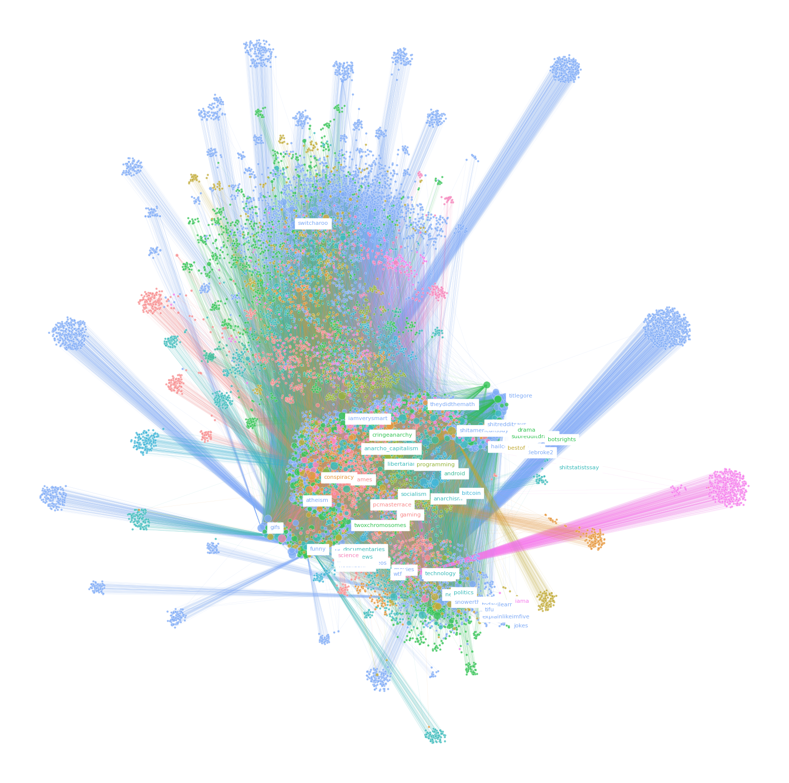
draw_graph(G_2023, 20)
/Users/claramoore/Desktop/VSCode_Projecrs/TestingStuff/venv/lib/python3.10/site-packages/graspologic/embed/base.py:199: UserWarning: Input graph is not fully connected. Results may notbe optimal. You can compute the largest connected component byusing ``graspologic.utils.largest_connected_component``.
warnings.warn(msg, UserWarning)
3 - Centrality Measures#
nx.is_weakly_connected(G_2014)
False
# take largest connected component so eigenvector centrality works
largest_cc = max(nx.weakly_connected_components(G_2014), key=len)
largest_cc = G_2014.subgraph(largest_cc)
centrality = nx.eigenvector_centrality(largest_cc, max_iter=300)
sorted_centrality = {k: v for k, v in sorted(centrality.items(), key=lambda item: item[1], reverse=True)}
pageranked = nx.pagerank(largest_cc)
sorted_pageranked = {k: v for k, v in sorted(pageranked.items(), key=lambda item: item[1], reverse=True)}
degree_centrality = dict(nx.degree(G_2014))
sorted_degree_centrality = {k: v for k, v in sorted(degree_centrality.items(), key=lambda item: item[1], reverse=True)}
centralities = pd.DataFrame([sorted_centrality, sorted_pageranked, sorted_degree_centrality]).T
centralities.columns = ['eigenvector_centrality', 'pagerank','degree_centrality']
centralities['sub'] = centralities.index
def get_out_degree(sub):
return G_2014.out_degree(sub)
def get_in_degree(sub):
return G_2014.in_degree(sub)
centralities['out_degree'] = centralities.apply(lambda row: get_out_degree(row['sub']), axis=1)
centralities['in_degree'] = centralities.apply(lambda row: get_in_degree(row['sub']), axis=1)
centralities = centralities.drop('sub',axis=1)
centralities.head(20)
| eigenvector_centrality | pagerank | degree_centrality | out_degree | in_degree | |
|---|---|---|---|---|---|
| iama | 0.245731 | 0.019820 | 3706.0 | 6 | 3700 |
| askreddit | 0.237335 | 0.018580 | 4164.0 | 0 | 4164 |
| pics | 0.201227 | 0.010221 | 2909.0 | 165 | 2744 |
| funny | 0.196630 | 0.009736 | 2990.0 | 455 | 2535 |
| videos | 0.192949 | 0.007856 | 2329.0 | 239 | 2090 |
| todayilearned | 0.176295 | 0.005445 | 2487.0 | 389 | 2098 |
| worldnews | 0.140717 | 0.005357 | 1541.0 | 150 | 1391 |
| gaming | 0.138902 | 0.006065 | 2070.0 | 684 | 1386 |
| news | 0.137688 | 0.003922 | 1500.0 | 249 | 1251 |
| gifs | 0.126054 | 0.004288 | 1334.0 | 36 | 1298 |
| science | 0.125195 | 0.004112 | 1211.0 | 74 | 1137 |
| wtf | 0.118693 | 0.003727 | 1416.0 | 229 | 1187 |
| the_donald | 0.111458 | 0.006557 | 1579.0 | 691 | 888 |
| showerthoughts | 0.110592 | 0.002407 | 932.0 | 0 | 932 |
| movies | 0.110197 | 0.003424 | 1166.0 | 176 | 990 |
| technology | 0.109735 | 0.002360 | 1008.0 | 215 | 793 |
| mildlyinteresting | 0.107211 | 0.002959 | 1108.0 | 116 | 992 |
| explainlikeimfive | 0.106259 | 0.001983 | 876.0 | 0 | 876 |
| politics | 0.103900 | 0.003809 | 1171.0 | 183 | 988 |
| conspiracy | 0.102715 | 0.003077 | 1385.0 | 569 | 816 |
4 - Modularity + Communities#
def determine_modularity(di_graph):
undir_graph = di_graph.to_undirected()
leiden_partition_map = leiden(undir_graph, trials=100)
return modularity(undir_graph, leiden_partition_map)
determine_modularity(G_2014)
0.4637194591212084
determine_modularity(G_neg_2014)
0.399419090523531
# really high modularity in the 2023 dataset, likely because of the way I sourced the data
determine_modularity(G_2023)
0.9591962571203899
determine_modularity(G_neg_2023)
0.8847887389053273
comms = nx_comm.louvain_communities(largest_cc)
comms.sort(key=len,reverse=True)
def draw_community_graph(G, community):
subgraph = G.subgraph(community)
d = dict(nx.degree(subgraph))
dict_keys = d.keys()
dict_vals = d.values()
labeldict = {}
for G_node in subgraph.nodes:
if subgraph.degree(G_node) < 60:
labeldict[G_node] = ''
else:
labeldict[G_node] = G_node
edges,weights = zip(*nx.get_edge_attributes(subgraph,'weight').items())
pos = nx.spring_layout(subgraph)
nx.draw(subgraph, pos=pos,node_size=[v for v in dict_vals],edgelist=edges, edge_color=weights,labels=labeldict,with_labels = True,font_size=8)
plt.show()
Identified communities#
# GAMING
comms[3]
{'crowfall',
'caught',
'giantbomb',
'rockleesmile',
'promptography',
'thespoonyexperiment',
'gamelounge',
'rlsd',
'thefourkingscasino',
'killstrain',
'realps4',
'gunsupgame',
'dayofinfamy',
'persona_gaming',
'bigcatgifs',
'thenotoriousdivision',
'snk',
'madslads',
'divremtest',
'gameofwar_fireage',
'gamersinaction',
'darksouls3',
'discododgeball',
'theevilwithin',
'discjam',
'project_scorpio',
'playstationplus',
'theoldballcoach',
'modpiracy',
'thewitness',
'dontrevivemebro',
'mullit',
'achievement_hunter',
'descent',
'playstationvr',
'redditbingo',
'testsub94',
'sandwichmasterrace',
'diamondpigman',
'veronicabelmont',
'mordhau',
'littlebigplanet',
'shouldibuythisgame',
'simpians',
'injustice',
'extralife',
'facesoffallout',
'steam_link',
'divisionremnants',
'techsupportmacgyver',
'maximumgraphics',
'finalfantasytactics',
'pcmasturbatingrace',
'pcmawwsterrace',
'unexpectedauschwitz',
'nvidiahelp',
'psp',
'flipacoinbot',
'xboxliveisdown',
'fapnrpg',
'bloodborne',
'wotsits',
'playitforwardvita',
'cod4promod',
'nerdcubed',
'lifeisstrange',
'gghots',
'madmaxgame',
'mathjokes',
'battletoads',
'graveyardgames',
'gaminggods',
'gnomoria',
'facepunch',
'promote',
'xboxbc',
'pcmrinaction',
'endlesslegend',
'amwf_alice',
'brutaldoom',
'rockstar',
'xboxfitness',
'shittybuildapc',
'gamingfeminism',
'gamebuzz',
'deadspace',
'daegames',
'premiumbattlestations',
'egttr',
'streetfighterv',
'mobilegames',
'aoe2',
'metro2033',
'theplayroom',
'airmech',
'downvotedwithgold',
'blackgirlgamers',
'buildapcforme',
'battlefield4',
'thedivisiontc',
'tardnation',
'findgames',
'ps2',
'ciscotremulous',
'survivetheforest',
'dualboxing',
'bfbc2',
'halflife3',
'frameratepolice',
'unreleasedgames',
'freetechadvise',
'thelastleviathan',
'aperturetag',
'irchives',
'pcsx2',
'playfire',
'xboxdesignlab',
'witcher',
'logistics',
'manvsgame',
'epicfeatsofgaming',
'allreview',
'trophies',
'midboss',
'batmanarkham',
'niggars',
'chivalrygame',
'pcmrshitpost',
'vgcovers',
'yakuzagames',
'lgelectronics',
'rippcmasterrace',
'merlinbbc',
'shittybattlestations',
'mehstation',
'reddit_refugees',
'avatartlabconspiracy',
'sleepingdogs',
'retsupurae',
'werealive',
'promotioncode',
'heat_rises',
'hl3confirmed',
'churchof2b',
'boid',
'thebrainstorm',
'bughunters',
'battlefield_live',
'yookalaylee',
'omnompixels',
'tmartn',
'mortalkombatx',
'delphi',
'bestofgatekeeping',
'killyourconsole',
'totalwarhammer',
'thehunterprimal',
'fable',
'convoy',
'hungryforhumor',
'teksyndicate',
'dreamcast',
'projectgenom',
'haveawank',
'everyonegroup',
'lamppostsimulator',
'qwertee',
'pelit',
'mw2',
'filthylucre',
'doomwadstation',
'horrorgaming',
'fallout',
'unrealtournament',
'reallypatientgamers',
'freelancer',
'mirrorsedge',
'warcraft3',
'shirtposts',
're6',
'gamedealsmeta',
'nvmp',
'mightyno9',
'askgamers',
'councilmasterrace',
'gamersbeingbros',
'17thlegion',
'jojamart',
'asus',
'40k',
'finalfantasyviii',
'bigcitystories',
'bestjokeev',
'xbox',
'buildapcsales',
'ghauris',
'whydidtheydothemath',
'eaaccess',
'dbdivisiontwo',
'psbattleroyale',
'hhour',
'returntosender',
'buttersouls',
'overclocking',
'rsoc',
'falloutboston',
'threadporn',
'aoe',
'ps3deals',
'gamermasterrace',
'falloutthoughts',
'ubisoft',
'fxmasterrace',
'timesplitters',
'verdun',
'greensquad',
'intothebreach',
'shitposting',
'grouppranks',
'bouldercardshears',
'vfio',
'starocean',
'wttg',
'teamevga',
'vita',
'nioh',
'killmybacklog',
'podgamer',
'datguylirik',
'soltrader',
'jadeempire',
'gametrade',
'ps4mods',
'openemu',
'minimumspecslimbo',
'xenogears',
'kentuckyroutezero',
'askpcgamers',
'nplusplus',
'fansofffx',
'autocorrekt',
'insidegaming',
'ihatepokemon',
'killerinstinctx1',
'gamingcounterjerk',
'simcity4',
'rivalscrews',
'videoball',
'firebox',
'gtagifs',
'suddenlytechsupport',
'hyperlightdrifter',
'crackwatch',
'uniquewatches',
'titanfall_2_',
'neebsgaming',
'xboxfeedback',
'thenewwaytoplay',
'silenthill',
'narutoblazing',
'ps4tournaments',
'cadeals',
'ageofmythology',
'alchestbreach',
'steam_giveaway',
'aaero',
'wtfrontier',
'f12013',
'onetruegary',
'fabriksny',
'hitman',
'indiegameriot',
'gameofnemesis',
'gayniggerfaggot',
'gamersbeingjerks',
'saltandsanctuary',
'litterallywerfkinggay',
'equalism',
'codinggames',
'gigabytegaming',
'subject_a119',
'kindafunny',
'polybridge',
'lucasarts',
'pes2013',
'subtlegaben',
'yukitheater',
'diablo1',
'necrodancer',
'unexpectedscp',
'consolegaming',
'dfo',
'lukecis',
'lifeinapost',
'deusex',
'celldweller',
'fablefortune',
'jimsterling',
'buildpc',
'praise_gaben_bot',
'gamerebel',
'howinerd',
'needforspeed',
'crimsonskies',
'tinytowervegas',
'piquant2013',
'soyouthinkyoucantroll',
'paladinslore',
'smachz',
'lotro',
'presshearttocontinue',
'spelunky',
'monotonetim',
'rpgmaker',
'lethalleague',
'nox',
'geekngamersanctuary',
'ebgames',
'falloutshelterandroid',
'steep',
'customavatars',
'gameshare',
'ps3f1',
'groddsgamers',
'calibrations',
'futile',
'liquidia',
'masseffectfics',
'unexpectedjohndies',
'cabalofthebuildsmiths',
'loadout',
'fuckwaffle',
'aninnocuoussub',
'genuinewords',
'unexpecteddaftpunk',
'fasterthanlight',
'idumb',
'theconsolemasterrace',
'simthemepark',
'gamersonreddit',
'ffx',
'project_ascension_css',
'grimdawn',
'valleymodders',
'ncaa14onlinedynasty',
'oldgamingbastards',
'snowglobe',
'sonsofanorangekitty',
'pso2',
'randomactsofsteam',
'pcgaming',
'gamesale',
'unexpectedexpected',
'amdmasterrace',
'customlegends',
'star_wars_battlefront',
'evolver_ocelot',
'indiegaming',
'gamers',
'steamdeals',
'freegames',
'helldivers',
'haloservers',
'pcpmasterrace',
'bestofpcmr',
'avirusnamedtom',
'letsplayvideos',
'suddenlyspanish',
'doomleaks',
'unexpectedmetallica',
'upvotedbecuzfappable',
'dothack',
'nipponichi',
'titanfallcodes',
'mafia_2k',
'desura',
'wine_gaming',
'ps4aggots',
'zombiearmy',
'falcom',
'nintendoswitchnews',
'jrpg',
'nerdcubedfaces',
'ktane',
'nfsrides',
'422',
'importgames',
'guysinreallifegamers',
'evolveunderground',
'farmingsimulator',
'wls',
'titusenkantettrekant',
'historicaltotalwar',
'acerofficial',
'tresebrothers',
'thiosk',
'behindenemylines',
'battlebornlft',
'crystalcatacombs',
'greatxboxdeals',
'hypefestation',
'nier_automata',
'rainbowsix',
'gamemusic',
'thetechnomancer',
'battlebornmemes',
'gameswatchdog',
'mgsv',
'thedivisiongrind',
'videogamedunkey',
'dishonored_2',
'faggotshitposterclub',
'mekorama',
'advancedmicrodevices',
'surgeonsimulator',
'nytimes',
'radeon',
'titanfallguides',
'valvenewsnetwork',
'shittyquip',
'shittysteamdevs',
'ifgaming',
'fateporn',
'themmobookclub',
'starcrawlers',
'miyazakisouls',
'garindan',
'bioshock',
'gamescores',
'zebramonkeys',
'elitedangerousdrama',
'ishalflife3outyet',
'g_bz96',
'rosetown',
'watchtonedie',
'starforge',
'moddergearsolid',
'fo3',
'btooom',
'gaminggiveaways',
'internetbullshit',
'roccat',
'dwelvers',
'geek3',
'avatar_s',
'corsair',
'frankieonpcin1080p',
'fuckhmx',
'pcmradio',
'suddenattack',
'allisonroadgame',
'factionwarfare',
'gamersrevenge',
'herosystem',
'hitboxporn',
'pes16',
'gamephysics',
'cynicalbrit',
'rickrollbattles',
'catsthegame',
'elementalstorm23',
'vivahappy',
'farmsofstardewvalley',
'witcher3circlejerk',
'druaga1',
'bully',
'autisticatheistgamers',
'siegelord',
'starships',
'gearsofwar',
'makeanemulator',
'wideasfcuk',
'quarriesofscred',
'rememberlegoisland',
'thehidden',
'iosgaming',
'pscirclejerk',
'seservers',
'blackops2',
'controller',
'nvidiayyy',
'neverwinter',
'godus',
'dstest',
'basebuildinggames',
'gamesmusicmixmash',
'totalwararena',
'shenmuedandies',
'darksiders',
'gamekeydump',
'elderscrollslegends',
'suddenlysoulcrushing',
'33rd',
'procrastinatorscrew',
'bestofbattlestations',
'movember',
'steamsaledetectives',
'gamindustri',
'survivalgaming',
'suikoden',
'thief',
'gog',
'lost_generation',
'games',
'classicbattlefield',
'chamberman',
'razer',
'vermintidemods',
'realtimestrategy',
'repair',
'fo4pc',
'macsetups',
'totalmemes',
'killingfloor',
'finalfantasyvii',
'cemumariomaker',
'amd',
'steam',
'hl3confirm',
'mattnjax',
'vermintide',
'lambdaconspiracies',
'spyro',
'bapcsalescanada',
'couchgaming',
'plagueinc',
'pcmasrerrace',
'bethesdasoftworks',
'farcry',
'arthurdid911',
'it15bitches',
'influent',
'legemhall',
'whywasidownvoted',
'freemspaint',
'hawken',
'candycrushsaga',
'fuckwindows10',
'bioshockinfinite',
'sleeperbattlestations',
'mgs5',
'robbaz',
'gfd',
'digitalblasphemy',
'roaching',
'cyanskeleman',
'wallpaperrequests',
'swordcoast',
'intel',
'petbattles',
'randomactsofgaming',
'amdhelp',
'sagesgrandarchives',
'boardgaming',
'thefourthfallout',
'workspaces',
'saintsrow',
'consolemasterrace',
'thrive',
'421elite',
'doomshitposterclub',
'thelastofus',
'deadrising',
'groundzerogaming',
'retro_vg',
'robloxmentions',
'iowagamers',
'secretponchos',
'pocketgamers',
'shakeandbake',
'afk_rotterdam',
'badcompany2',
'battlefield',
'killerinstinct',
'steamcontroller',
'smashgrab',
'overgrowth',
'irelandgaming',
'tropico',
'steamgameswap',
'youmakethegame',
'unexpectedsips',
'ps4deals',
'seattlerockband',
'winak',
'theslashering',
'ww2games',
'tabled',
'anvil',
'humblebundles',
'impcmrandthisisdeep',
'wayfarerspub',
'gaben',
'coopplay',
'bf4',
'witcher3mods',
'steamgiveaways',
'liquidsky',
'dungeondefenders',
'mirageaw',
'ps3',
'titanfall',
'nerdcubedservers',
'reddx',
'meandromeda',
'breathoffire',
'farcrygame',
'haloonline',
'supraball',
'sneapsnop',
'dungeonfighterlevelup',
'cyberfeminism',
'f4consolemods',
'origin',
'quitmybullshit',
'shittybloodborne',
'metro_game',
'honestposts',
'plutogames',
'reddit4tfyc',
'bf_hardline',
'bitchimatree',
'battlefrontii',
'emmablackery',
'slycooper',
'gaustudios',
'tacticalgameplay',
'skara',
'consoledeals',
'ducksquared',
'thestompingland',
'stalker',
'nhl4psn',
'linux_gaming',
'bigpharmagame',
'indoctrinated',
'grandtheftautovmemes',
'viscera',
'pcgreaterbeings',
'fire_snyper',
'ultrawidemasterrace',
'nvidia',
'wasteland_3',
'starcraft2arcade',
'mecha',
'soma',
'forgetti',
'gearsofwarultimatexb1',
'gamedisplays',
'remoteplay',
'vampyr',
'legendofdragoon',
'adumplaze',
'goetiagame',
'grandmasboy',
'metalarms',
'nfscirclejerk',
'amd_linux',
'dyinglight',
'wasteland2',
'deadlyunicorn',
'bibleofgaben',
'killzone',
'gwent',
'xboxrecordthat',
'postshitherefaggot',
'yourgpuashit',
'justbeetfarmthings',
'lambdalocator',
'etcshow',
'evolvegame',
'playgauntlet',
'infamoussecondrp',
'launchhorizon',
'constructivecrisicism',
'crowdsource',
'knightsofchill',
'emulationstation',
'support_group',
'gamemob',
'garner2015',
'boopshow',
'patientgamers',
'safepost',
'ayymdzone',
'ntccgamingclan',
'spmod',
'shittyfalloutlore',
'gamingnews',
'jafner425',
'localmultiplayergames',
'deformersgame',
'insurgency',
'bechdel',
'combatarms',
'hdsanctum',
'girlgamers',
'collectiveintelgroup',
'xenimus',
'playstationnow',
'lifeasannpc',
'uplay',
'gaminghipsters',
'tomodachilife',
'imaginaryfallout',
'wholesomepcmr',
'titanfall_x1',
'punkillers',
'winehq',
'rocket_league',
'titanfall_360',
'ftlgame',
'godofwar',
'5by5dlc',
'crysis',
'dragonnest',
'joshm_01',
'fo4',
'firefall',
'originalxbox',
'ukgames',
'europauniversalis',
'theattack',
'rpg_gamers',
'titanfallstory',
'shitprefixsays',
'cattailsgame',
'cyanideplaysgames',
'suckitreposts',
'dynastywarriors',
'theordergame',
'withoutthesarcasm',
'arya35',
'thugpro',
'residentevil',
'lastofus',
'shadow_of_war',
'itstartswithasquare',
'peggle',
'lordsofthefallen',
'nichegame',
'masseffectandromeda',
'templartips',
'cemu',
'youtube_fun',
'recore',
'competitivedestiny',
'thedivision_builds',
'samandmax',
'stardew_valley',
'gamemaker',
'buildapcproxy',
'imdbvg',
'ffxv',
'caravan',
'internetfreedom',
'stonehearth',
'reddeadredemption',
'giftofgaben',
'thps',
'megagamer',
'gamestop',
'microcenterproxy',
'ifoundthe12yearold',
'starwarsgamers',
'shotoniphone',
'gamingleaksandrumours',
'gamingcirclejerk',
'robocraft',
'luigi',
'darksynth',
'nintendoom',
'dishonored',
'gamersaredead',
'joinsquad',
'metalgearshitpost',
'1990boys',
'serjtankian',
'xboxone',
'superhexagon',
'playstationsolutions',
'the_division',
'target',
'opensouls3',
'offerdat',
'anvilonline',
'broforcegame',
'huniepop',
'pcpurism',
'destinyclips',
'shittymemes',
'hype',
'xbox360gamenight',
'legouniverse',
'agentsofmayhem',
'thatcouldbeasub',
'jaggedalliance',
'mousereview',
'maxkarchive',
'roboticpotato',
'burritomasterrace',
'kof',
'fallout4_pc',
'starpointgemini',
'pcmrbots',
'battlefield_one',
'faeria',
'valveapologists',
'playstation',
'infamousspoilers',
'dayofdefeat',
'scbuildit',
'fuckuplay',
'shwip',
'survivalhorror',
'conkersbadfurday',
'tombraider',
'creepygaming',
'xboxpreview',
'falloutnewvegas',
'nobethesdasallowed',
'plus7intelligence',
'wasteland',
'btsgaming',
'freedomwars',
'theydidtheevs',
'twitchplaysdark',
'lostgamingfriends',
'albiononline',
'overboredgaming',
'player2controller',
'thecreatures',
'cortexcommand',
'uselesssuperpowers',
'metagamingcirclejerk',
'bunker_bytes',
'hydraulicpresschannel',
'thepriceisright',
'pcmasterrace',
'callofdutyworldwartwo',
'mecoop',
'smallytchannels',
'greenmangaming',
'pcmasterrac',
'nexonzombies',
'prophetsofdementia',
'kommunitykombat',
'fakehistory',
'supragames',
'proceduralpenis',
'jamiroquai',
'personaforpc',
'masseffectlore',
'twobestfriendsplay',
'lanoire',
'bukopie',
'blacktop',
'infinityfarming',
'steamgrid',
'spidersimulator17',
'crazysexydancefuntime',
'reddit101',
'consortiumidgi',
'bapcsaleseurope',
'emulation',
'awesomenauts',
'pitpeople',
'amdradeon',
'facesofthewastes',
'squareenix',
'isthatcum',
'gamedealsuk',
'vitagamenight',
'piquantproductions',
'gaming',
'z_quinn',
'gamekeys',
'thedivision',
'averagejoesgamer',
'outofthelooppcmr',
'shaboozey',
'hungrybutts',
'xboxonehelp',
'retroarch',
'istillplaythis',
'obsidian',
'ps4_battlefront',
'noveltypccases',
'steammonstergame',
'tron',
'steamsupport',
'hydraulicpress',
'progaymers',
'toomuchcontext',
'thelastofusfactions',
'pcproblem',
'gamingshowerthoughts',
'darksouls3jpn',
'residentevil7',
'gamervideos',
'gta5leak',
'fallout4tips',
'seaofthieves',
'brickandbottlegaming',
'shittypuns',
'spufpoweredcirclejerk',
'glorioustimasterrace',
'homefront',
'firefoxmasterrace',
'division',
'pulsarlostcolony',
'gmod',
'dolphsquad',
'titanomachy',
'warcraft4',
'relichunterszero',
'hfr',
'ripplesandwaves',
'horizon',
'pcmasturraic',
'vgopodcast',
'surprisegangster',
'fo4sucks',
'wurmonline',
'customrobo',
'watchdogs',
'vindictus',
'pcmasterraceshitposts',
'peoplewhosayheck',
'falloutmods',
'console',
'nononomaybe',
'gamediscussion',
'alphacentauri',
'totalannihilation',
'wildlandsmovies',
'thelongestjourney',
'bf1942',
'shittyvaultboys',
'gaab350',
'warofomens',
'theyguessedthemath',
'starwarsbutthurt',
'simcity',
'grouplove',
'gamemakertutorials',
'dzpd',
'gaming_illuminaughty',
'infamous',
'banjokazooiecsstest',
'novum',
'doom',
'massivechalice',
'deathby1000cuts',
'rickyisms',
'trollgaming',
'eegras',
'elysiandroptroops',
'divinityoriginalsin',
'xbox360',
'cracksupport',
'nosgoth',
'swforcecollection',
'invisibleinc',
'imean',
'fodust',
'outofammovr',
'im34andthisisdeep',
'cheerhate',
'bananamasterfruit',
'vitatv',
'pcgames',
'askmenadvice',
'nathanlovesdabaes',
'giftofgames',
'metalgearsolidv_pc',
'gamingcirklejerk',
'commentstories',
'glitches',
'nier',
'pokemonlogic',
'gamingjerk',
'mathreddit',
'subject617',
'allgamers',
'blackwellacademy',
'themasterplan',
'pricefield',
'razersupport',
'selfpromotion',
'portal',
'averagebattlestations',
'pvzgardenwarfare',
'xboxlivegold',
'shadowrunfps',
'fo4immersivegameplay',
'iamveryverysmart',
'gamingsuggestions',
'panglossthetutor',
'fallout4',
...}
draw_graph(G_2014.subgraph(comms[3]), 30)
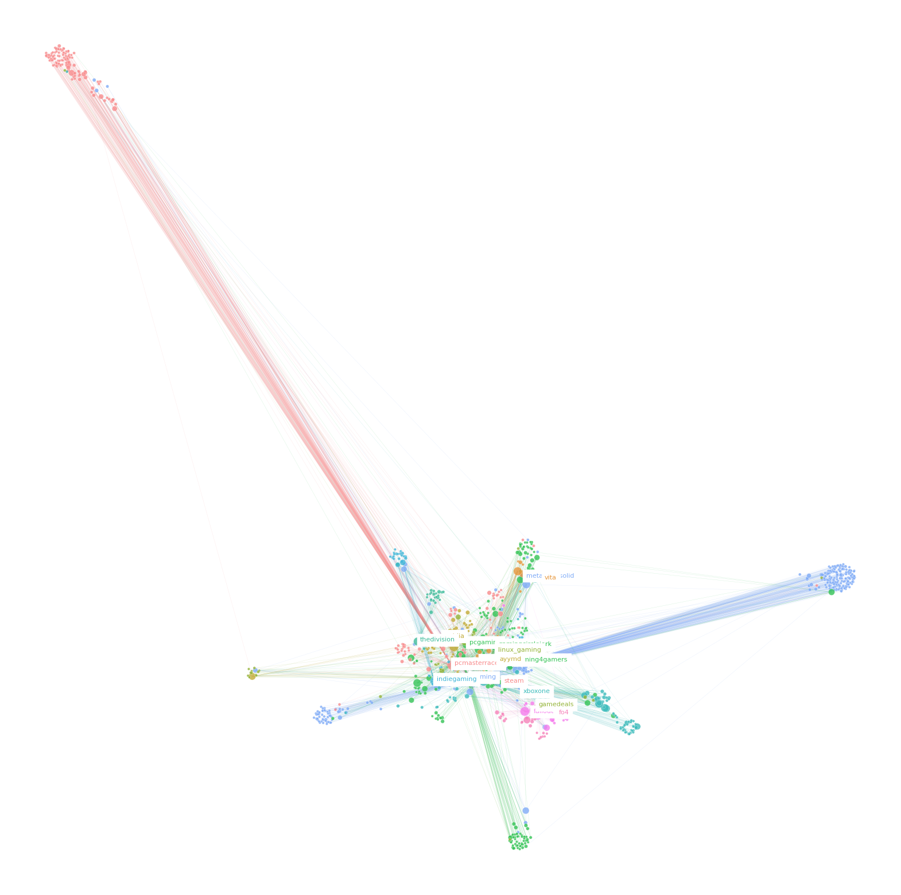
# CONSPIRACY THEORIES
comms[6]
{'1984isreality',
'844thworldproblems',
'9000sins',
'911truth',
'911truthers',
'911truthwiki',
'actualconspiracies',
'advancedtechresearch',
'againstthechimpire',
'againstwhiterights',
'agentsofdoubt',
'agroindustrialcomplex',
'alexjones',
'alien_theory',
'aliens',
'alternativehealth',
'alternativehistory',
'alternativemedicines',
'altnewz',
'american_history',
'americanjewishpower',
'americanstasi',
'anarchy',
'ancientegypt',
'ancientgiants',
'ancientknowledge',
'announcements',
'antarcticanomalies',
'anti_conspiracy',
'anti_jidf',
'anticonspiracy',
'antifacebook',
'antimonsanto',
'antisemitismwatch',
'antisjweuropean',
'antistyle',
'antivax',
'anythinggoesnews',
'arcticgate',
'ask_privacy',
'askscientists',
'asterix',
'astralprojection',
'astronots',
'atoptics',
'aug2016event',
'australianfreespeech',
'autonewspaper',
'awanbrothers',
'backup',
'badbios',
'badgovnofreedom',
'badmodnoupvote',
'badmusictheory',
'badnewsusa',
'badscience',
'badselfeater',
'bandelaeffect',
'bannedfromwikileaks',
'bdconspiracy',
'beecoin',
'benswann',
'bepsi',
'best_poetry',
'betternews',
'beyblade',
'biblicalarchaeology',
'bigenergy',
'bigpharma',
'bioscience',
'blackflag',
'blackops',
'blamethejews',
'blogsandthinkpieces',
'bodylanguage',
'bpdsupport',
'brigade_conspiracy',
'brigaded',
'buildingalternatives',
'bullshitmediaempire',
'c_d_t',
'c_s_t',
'candida',
'captainobvious',
'captcha',
'cbrne',
'ccsvi',
'ceasethyfalsehoods',
'chemprints',
'chemtrail',
'chemtrails',
'chrisolivertimes',
'christiansawake2nwo',
'churchofcot',
'cia',
'ciawatch',
'clermontfd',
'climatehoax',
'clintoninvestigation',
'clocksstrike13',
'clone',
'cloning',
'cloud_computing',
'cnn',
'codoh',
'coincidencetheorist',
'cojocoinaction',
'colconxpx',
'comedynerds',
'complexsystems',
'consciousfuturist',
'conshmearacy',
'conspiacy',
'conspiraception',
'conspiracies',
'conspiracy',
'conspiracy201',
'conspiracy_uk',
'conspiracy_videos',
'conspiracyama',
'conspiracybestof',
'conspiracycrossfire',
'conspiracydocumentary',
'conspiracyfact',
'conspiracyfacts',
'conspiracyhub',
'conspiracyhumour',
'conspiracyii',
'conspiracymemes',
'conspiracymoderated',
'conspiracynews',
'conspiracynorules',
'conspiracystickies',
'conspiracywhatif',
'conspiratard',
'conspiratardmythos',
'conspiratardwatch',
'conspirawhiners',
'conspiritards',
'conspiritors',
'conspiro',
'conspirology',
'contamination',
'copperheados',
'coreboot',
'coreyfeldman',
'cosmicdisclosure',
'create',
'creation',
'credibleufoevidence',
'crimeuncut',
'cropcircles',
'crops',
'crypto',
'cryptography',
'cryptozoology',
'cssban',
'cucktown',
'cyberanakinvader',
'dataconspiratardshate',
'davidicke',
'debateconspiracy',
'debateevolution',
'debateflatearth',
'debatenazism',
'debunked',
'debunking',
'debunkthis',
'defamation',
'defendwikileaks',
'descentintotyranny',
'destroyzion',
'diagnosethem',
'didthemath',
'digitalcartel',
'dirgemusic',
'discoverthetruth',
'disinfo',
'disinformants',
'disinformation',
'djhelpplus',
'dncdeathtoll',
'documentedtruth',
'dontbelieveme',
'downtimebananas',
'drjudywood',
'drunksofreddit',
'duckvimes',
'earth_national_front',
'earthing',
'ebes',
'educativevideos',
'eightnote',
'electromagnetics',
'electronicharassment',
'elisalam',
'emfeffects',
'enchantedrock',
'encryption',
'endlesswar',
'energy_work',
'engineeredattacks',
'enlightenment',
'esism',
'essentialoil',
'essentialoils',
'establishmentterms',
'ete',
'eurodocs',
'european',
'europeansandbox6',
'europrivacy',
'evolutionreddit',
'falseequivalency',
'falseflagwatch',
'farright',
'findassange',
'firefighters',
'firstcoast',
'firstlook',
'flat_earth',
'flatearth',
'flatearthsociety',
'fluoridemyths',
'fluoridepoisoning',
'flytapemakesfunofyou',
'free_assange',
'freecad',
'freedompieces',
'freemigration',
'freespeech',
'freethinkingcanadians',
'freezepeachinaction',
'fringediscussion',
'fringephysics',
'fringescience',
'fringetheory',
'fuck_all_mods',
'fucklego',
'full_news',
'gangstalking',
'gangstalkingmkultra',
'gentilesunited',
'geocentrism',
'getoutofbed',
'gmo',
'gmofacts',
'gmofail',
'gmofree',
'gmoinfo',
'gmomyths',
'gmonews',
'gmosf',
'gnosticism',
'goldsuggestions',
'gondola',
'goodlongposts',
'goodnews',
'goodshillhunting',
'gothamshield',
'governmentoppression',
'graffhelpplus',
'green_peace',
'greenlight',
'guft',
'hackedteam',
'hailapartheid',
'hbt',
'heavyturd',
'herbalmedicine',
'hiddenconspiracy',
'highersidechats',
'highstrangeness',
'historicalreligion',
'holocaust',
'holocomments',
'holofractal',
'homeopathy',
'humanbeans',
'humanize',
'humanoidencounters',
'hyperhumanity',
'iamaparanoidloser',
'icloud',
'identity_theft',
'idiotracists',
'idontlikerpolitics',
'ihaterconspiracyclub',
'ilerminaty',
'illuminati',
'imablue',
'inaccuratepredictions',
'indianconspiracies',
'indigo_wanderers',
'insane_blame_shills',
'insomnia',
'intelligence',
'internetlibertarians',
'internetpr',
'inthemorning',
'irrationalpsychonaut',
'israelsubredditwatch',
'isrconspiracyracist',
'itprobe',
'jadehelm',
'jews_not_muslims',
'jewsdidthis',
'julianassangeisdead',
'junkscience',
'justshillthings',
'keepournetfree',
'kevinfolta',
'kooktown',
'labeling',
'lambeosaurus',
'legaladvise',
'levantinewar',
'libraryofbabel',
'librecapitalism',
'libreconspiracy',
'limitedhangouts',
'lionsground',
'loomynarty',
'love_and_light33',
'loveandlight',
'lowerthebar',
'magnora7',
'mandela_effect',
'mandelaeffect',
'mandelajerk',
'martintimothyalts',
'massmeditations',
'melanoidnation',
'meme',
'messiahcomplex',
'metabolix',
'metamandela',
'mideastpeace',
'mindcontrol',
'miracle',
'misguidedchildren',
'mkultra',
'mobydick',
'moderneschatology',
'molestedinthewomb',
'mongolianhatewatch',
'monsanto',
'monsantocompany',
'mooltipass',
'moonhoax',
'moosearchive',
'mooseknuckleinpublic',
'more_test',
'mothman',
'multiculturalism',
'multiplesclerosis',
'murderofcrows',
'music_video',
'musictosleepto',
'my_online_alias',
'mymadramblings',
'mysterybabylon',
'nationalsocialism',
'natoisisis',
'natureofreality',
'naturopathy',
'nazihunting',
'neologisms',
'neurology',
'new_american_system',
'newamerica',
'newjerseyfreakshow',
'newrussia',
'newsalternative',
'newsonreddit',
'newsuncut',
'newsweek',
'newsz',
'no_conspiracy',
'noagenda',
'nocorporations',
'nomorefluoride',
'nosurf',
'notaconspiracy',
'notyourmothersreddit',
'nsa',
'nsaleaks',
'nucensorship',
'nuclear911',
'nukes',
'nwojobs',
'occultconspiracy',
'offensivespeech',
'op_jade_helm_15',
'op_jade_helm_16',
'openmedia',
'opeyeswideopen',
'opthelist',
'organic',
'organicfarming',
'organiclife',
'ourdyingplanet',
'ourflatworld',
'outbreaknews',
'oyvey',
'paleoanthropology',
'paleodiet',
'panamapapers',
'pandemic',
'panopticon',
'paperballots',
'paradigmchange',
'paranoia',
'paranoiashoppe',
'paranoidlunatics',
'paranormallockdown',
'pedogate',
'penistrolls',
'petloss',
'phoneaddiction',
'physics_awt',
'pizzagatememes',
'planetx',
'polacks',
'polfacts',
'police_discussion2015',
'police_v_video',
'polistan',
'politic',
'politics1',
'postnationalist',
'pptranslators',
'privacy',
'privacytoolsio',
'privateinternet',
'proimmigration',
'projectmkultra',
'projecttox',
'propaganda',
'prophecy',
'protonmail',
'provemewrong',
'purity_of_essence',
'pwned',
'qubes',
'quinnspiracy',
'radpill',
'rally_point_bravo',
'randompredictions',
'rants',
'rconspiracytranslate',
'realitytv',
'realskeptics',
'realtech',
'redactions',
'redditconspiracy',
'redditdotcom',
'redditminusmods',
'releaks',
'remove',
'repairgovernment',
'reportthetrolls',
'reptiliandata',
'reptilians',
'restorethefourth',
'restorethefourthsf',
'retardedcripples',
'retconned',
'retractions',
'romerules',
'ronpaul_erotic_fanfic',
'roundearth',
'roundearthmyths',
'rumplestiltskin',
'russianhistory',
'sacredgeometry',
'sandyhookhoax',
'santagate',
'satangate',
'saudiarabiaisisis',
'scareporn',
'schizophrenic',
'seashepherd',
'secretnomore',
'seoprohelp',
'sep2015event',
'sgu',
'shadowwar',
'shareblue',
'shill',
'shills',
'shitcivilianssay',
'shitgoyimsays',
'shitrconspiracysays',
'shitspezsays',
'shittyconspiracy',
'shittygeography',
'sixthworldmusic',
'skeptard2',
'skeptic',
'skeptics',
'skycentrism',
'sleep',
'snowden',
'socialcontrol',
'socialismvscapitalism',
'socialist',
'sockpuppetry',
'solving_32865',
'solvovir',
'spacefraud',
'spacextalk',
'specialaccess',
'spezforprison',
'spiritualism',
'spirituality',
'splash',
'stallmanwasright',
'stand',
'startrekgifs',
'stingray',
'stophate',
'stormtroofers',
'styrelserummet',
'styxhexenhammer666',
'suspectedshills',
'sxsl',
'targetedenergyweapon',
'targetedenergyweapons',
'targetedindividuals',
'technewz',
'techwar',
'teduh_links',
'teetotalcrossculture',
'the_donald_dissenters',
'the_reptilians',
'theamericas',
'thebreitbartsalon',
'theculling',
'thedavidpakmanshow',
'thefederalreserve',
'theinternetofshit',
'thenau',
'theoryofastrology',
'thepedofile',
'thereisassange',
'thesphinxclub',
'theunexplained',
'theworkersunited',
'theworldisflat',
'theworldisntflat',
'thinkology',
'thiscantbehappening',
'thoughtpolice',
'threats',
'threema',
'tinfoilhats',
'tivideos',
'todayilearned_til',
'tony_will_stalk_me',
'topcuntsofreddit',
'topmind_amas_debates',
'topmindsofreddit',
'totallynotracist',
'tower7',
'tragedyandhope',
'trueconspiracy',
'trueskeptics',
'truesocialism',
'trumpspiracy',
'truthleaks',
'tsbd',
'uap',
'ubuntuphone',
'ufos',
'unaustralia',
'uncensored_reddit',
'uncensorednewsexposed',
'uncg',
'undeleteshadow',
'unexplained',
'unexplainedphotos',
'unfilter',
'unitedresistance911',
'unitedwestand',
'upliftingtrends',
'upvotebrigade',
'usnoisrael',
'utcognoscantveritatem',
'vaccinemyths',
'valuableconversation',
'voatdrama',
'voaters',
'votebot',
'votecoin',
'walker',
'wall2',
'wanttobelieve',
'webofslime',
'wemaketheterror',
'westernterrorism',
'whatdoesmikehawksay',
'wheredidthetowersgo',
'whereisassange',
'whereisjulian',
'white_pride',
'whitebeauty',
'whiteeagle',
'whiterights',
'whywasmypostdeleted',
'wikidecentralized',
'wikileaks',
'wikileaks_org',
'wikileaksalt',
'wildnews',
'wlresearchcommunity',
'worldpolitics',
'worldtoday',
'xntp',
'zionism',
'zionismexposed',
'zionist',
'zog'}
draw_graph(G_2014.subgraph(comms[6]), 30)
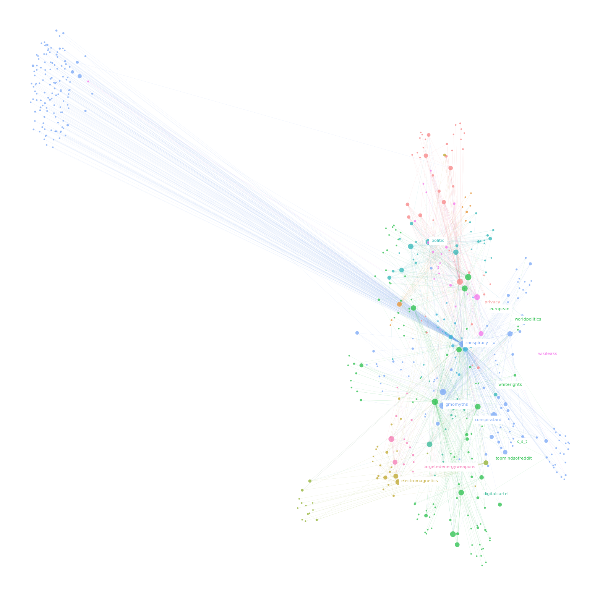
# DOTA + League of Legends
comms[7]
{'1308',
'aapsquad',
'aatroxmains',
'ad2l',
'adamlukas',
'afez',
'afrowearmy',
'ahrilol',
'ahrimains',
'ahritime',
'akalimains',
'albusnoxluna',
'alfred',
'alhenalol',
'alphadraft',
'amateurdota2league',
'amster2',
'amumumains',
'analysemydota2',
'analyzelast100games',
'aniviamains',
'aplatypuss',
'aquadragon',
'aram',
'arteezy',
'atlasreactor',
'aufbafexperiments',
'aui_2k_circlejerk',
'aurelion_sol_mains',
'autodraft',
'azirbugs',
'azirmains',
'azurecatalyst',
'bardmains',
'beaverknight',
'bestofboth',
'bestofbronze',
'beyondthesummit',
'bigfatlpjiji',
'blem',
'blitzmains',
'blizzardpls',
'boinked',
'brofresco',
'bronze5advice',
'busey',
'caitlynmains',
'camillemains',
'capslocked',
'captainsmode',
'cassiopeiamains',
'championmains',
'chromarequest',
'chu8',
'circloljerk',
'clearlovestrophycase',
'clg',
'cloud9',
'coastlife',
'comparativemythology',
'compdota2',
'competitivehots',
'coolstories',
'crazyshithappening',
'cseventvods',
'curseordie',
'cypresstributepics',
'd2pudgewars',
'dankofmemes',
'dariusmains',
'devsteam',
'dianamains',
'dignitaslol',
'dirtysionmains',
'djwheat',
'dmrcirclejerk',
'dota',
'dota2',
'dota2_jp',
'dota2ai',
'dota2altclick',
'dota2arts',
'dota2betting',
'dota2bitching',
'dota2brasil',
'dota2castit',
'dota2cg',
'dota2circlejerk',
'dota2circlejerkjerk',
'dota2customgames',
'dota2dadjokes',
'dota2esp',
'dota2esports',
'dota2fanfics',
'dota2fashion',
'dota2fashionadvice',
'dota2fuckyouj',
'dota2india',
'dota2interviews',
'dota2jobs',
'dota2lore',
'dota2loungebets',
'dota2modding',
'dota2ndq',
'dota2nepal',
'dota2nosleep',
'dota2pk',
'dota2pubs',
'dota2pubstomps',
'dota2shitpost',
'dota2shitthreads',
'dota2showerthoughts',
'dota2strat',
'dota2techies',
'dota2til',
'dota2trade',
'dota2tradelounge',
'dota2tutor',
'dotaconcepts',
'dotacr',
'dotaimba',
'dotamasterrace',
'dotameme',
'dotatips',
'dotatrade',
'dotavods',
'doublelift',
'doubleliftstrophycase',
'doublelifttrophycase',
'downtoone',
'drmundomains',
'dyrus',
'e3mafia',
'eadotadates',
'ecvisualize',
'ekkomains',
'elementsgg',
'elisemains',
'embergg',
'encloseddota',
'enfos',
'esportdrama',
'esportpsychology',
'esports',
'esportsaustralia',
'esportsbr',
'eternalenvy',
'euwserverproblems',
'everythingriven',
'exilechip',
'ezrealmains',
'fandomwank',
'fantasydota',
'fantasylcs',
'fantasylolmobile',
'fantasystrike',
'fateanother',
'feverclangaming',
'fiddlesticksmains',
'fieldofjusticeporn',
'fioramains',
'fizzmains',
'flyquest',
'fnatic',
'foxist',
'fuckazubu',
'fwgd',
'g2esports',
'gakuragaming',
'gambitgaming',
'gamechanges',
'gameveteran',
'gangplankmains',
'garenmains',
'gbay',
'gdrgaming',
'gemtd',
'generaldiscussiongd',
'ggdota2',
'gglol',
'ggriot',
'girlswithglasses',
'gnarmains',
'godmoist',
'grammarbad',
'gravesmain',
'gravesmains',
'gromp',
'guessthedotahero',
'h2kgaming',
'hearthstonevods',
'hecarimmains',
'herobuilds',
'heroesofnewerth',
'heroesofthestorm',
'heroesofthestorm_ja',
'heroesvods',
'hextechleague',
'hot_bid',
'hotscirclejerk',
'hotsreplaydata',
'hotsundelete',
'houseparty5v5',
'huzzygames',
'iamveryranked',
'ideasfrommyhead',
'ihatedragons',
'illaoi',
'immortals',
'immortals_gg',
'invenglobal',
'ireliamains',
'irishdota',
'islandd',
'itncast',
'itsdraven',
'ivernmains',
'j1mmyleague',
'janna',
'jaycemains',
'jhinmains',
'jkkoverd',
'jthemmaster',
'juggalotuggalo',
'jungle_mains',
'justokgamers',
'justzenoththings',
'kaceytron',
'kalistamains',
'karthusmains',
'kassadinmains',
'katarinamains',
'kaylemains',
'kazragore',
'kennenmains',
'khazixmains',
'kikeroni',
'kindred',
'koreanadvice',
'koreanparenting',
'kylegannok',
'laissezsquares',
'lanasl2015',
'leafeatorxxx',
'league',
'league_of_legends',
'league_of_legends_',
'league_of_legends__',
'leagueclubs',
'leagueconnect',
'leaguedating',
'leaguefactionbattles',
'leaguefactions',
'leaguefreaks',
'leagueleaks',
'leaguemontages',
'leagueofappreciation',
'leagueofbadideas',
'leagueofbread',
'leagueofchaos',
'leagueofdata',
'leagueoffailures',
'leagueoffun',
'leagueofjinx',
'leagueofjokes',
'leagueoflegends',
'leagueoflegendsnews',
'leagueoflegendsuk',
'leagueofmemes',
'leagueofmeta',
'leagueoframmus',
'leagueofreworks',
'leagueofvideos',
'leagueofwhinybitches',
'learndota2',
'learndota2league',
'leblancmains',
'leesinmains',
'legalnewsinesports',
'leoreddit',
'leprogames',
'let4def',
'letsdrownout',
'lichardrewis',
'lilypichu',
'linamasterrace',
'liquidlegends',
'live_streams',
'lol_cris',
'lolchampconcepts',
'lolcj',
'lolclubs',
'lolcollegiateprogram',
'lolcommunity',
'lolconspiracylol',
'lolcustom',
'loldads',
'loldyrus',
'lolegypt',
'lolents',
'lolesports',
'loleventvods',
'lolfanart',
'lolfightclub',
'lolforthepeople',
'lolgaymers',
'loloce',
'lolqc',
'lolscrims',
'lolshorts',
'lolskinconcepts',
'lolsumo',
'loltube',
'lolviewingparty',
'lolvladimirmains',
'lookingforheroes',
'lootmarket',
'loreofleague',
'losleaguers',
'loungestats',
'luccacomics',
'lucianmains',
'lux',
'luxclubs',
'lytesmites',
'mactang',
'makingzerosense',
'malzaharmains',
'maplerates',
'maplestory',
'mariusisteingott',
'marksmanmains',
'masteryimains',
'mcx',
'mechmoondwags',
'megaming',
'misfits',
'misfitsgg',
'missfortunemains',
'momsspaghetti',
'moneyboy',
'monkeyhats',
'moonducktv',
'mordekaisermains',
'morganamains',
'mots',
'murky',
'namechain',
'namimains',
'nasusmains',
'nautilusmains',
'navalwarfare',
'ncsuteamalpha',
'neatwallpapers',
'nederdota',
'nexusnewbies',
'ngaus',
'nidaleemains',
'nintendude',
'nocturnemains',
'noobsoftheancient',
'notesex',
'nottheesex',
'nowaifunolaifu',
'nunumains',
'nyxnyxnyx',
'oceanicdota',
'ogn',
'omggaming',
'onetrueclip',
'oriannamains',
'origen',
'ottawa_volvo_club',
'overwatched',
'pbe',
'peeeps',
'penisballsautismcop',
'peterpandam',
'phoenix1',
'phreakpuns',
'piltovergaming',
'poppymains',
'potatotm',
'premade5',
'qtken',
'quinnmains',
'quitleague',
'rammuscirclejerk',
'rammusmains',
'randomactsofdota2',
'raresense',
'realrivenmains',
'realtwitchmains',
'redditandchill',
'redditdota2league',
'redditscania',
'renegades',
'renektonmains',
'rengarmains',
'reppit',
'rhombussandbox',
'riotconspiracy',
'riotfreelol',
'riothorrorstories',
'ripdota2',
'rivenmains',
'robertxlee',
'roplay',
'rossboomsocks',
'rtz_club',
'rumblemains',
'russian',
'ryzemains',
's4ndr4m0nt0k',
'samuromains',
'sandboxgate',
'scarra',
'scarrapics',
'sealdota2',
'secretdota2',
'shacomains',
'sheevergaming',
'shen',
'shittiestofshitposts',
'shittyaskicefrog',
'showerargument',
'shurima',
'shyvanamains',
'singedmains',
'singlechampchallenge',
'sjokz',
'skeletonking',
'skgaming',
'skrid',
'smashbrosmovesets',
'sneezingpandas',
'soraka',
'sorakamains',
'spiderrights',
'spongedota',
'steelseries',
'stellarlotus',
'stillnotdavid',
'stopdota2',
'stormform',
'strife',
'strifelinux',
'summoners',
'summonersupport',
'summonerwitchhunt',
'supahotcrew',
'supportmains',
'swainmains',
'syndramains',
'taipeiassassins',
'taliyahmains',
'talonmains',
'tampaesports',
'taricmains',
'tcup',
'tdk',
'team_liquid',
'teamarenaonline',
'teamclg',
'teamdignitas',
'teamhalla',
'teamimpulse',
'teamlmq',
'teamlol',
'teamredditteams',
'teamsecret',
'teamsolomid',
'teemo_mains',
'teemotalk',
'tforcenetwork',
'thegdstudio',
'thelostvikings',
'theproffesor',
'thesecretweapon',
'thewavegamers',
'theydidthechemistry',
'theydidthemememath',
'threshmains',
'ti4network',
'ti5ticket',
'timmytonka',
'tonightshowfallon',
'top_mains',
'toptierhots',
'totp',
'trailerdrake',
'treesquad',
'tristanamains',
'truedota2',
'trundlemains',
'twistedfatemains',
'twitchmains',
'twitchstreams',
'u_leagueoflegends',
'udyrmains',
'ukdota',
'ukesportshub',
'unexpectedouija',
'unicornsoflove',
'universityoflegends',
'unstablegames',
'upvotedbecausegrill',
'urgotmains',
'varusmains',
'vaynemains',
'veigarmains',
'velkoz',
'velkozmains',
'vgda',
'viktormains',
'vladimirmains',
'vodsbeta',
'vodsprivate',
'volvo',
'vvvortic',
'warwickmains',
'watchvaynedie',
'wc3',
'welikedota',
'whereispastrytime',
'whyihatethefrontpage',
'winterfox',
'womp',
'wukong',
'wukongmains',
'wyk',
'xddd',
'xerathmains',
'xetu',
'yasuomains',
'yenwood',
'yimo',
'yorickmains',
'zedmains',
'zeroesgaming',
'zerostyle',
'zileanmains',
'zyramains'}
draw_graph(G_2014.subgraph(comms[7]), 20)
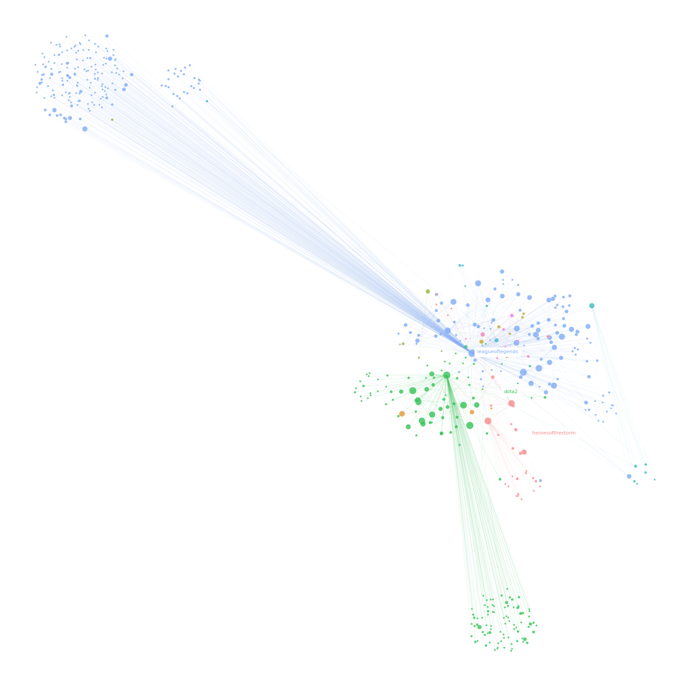
# SCIENCE + HEALTHCARE
comms[8]
{'23andme',
'aboutdopamine',
'academia',
'acl',
'activism',
'adayinthelife',
'agingbiology',
'aiphilosophy',
'alienagenda',
'allthesciences',
'als',
'altcancer',
'altdiabetes',
'alternativecancer',
'altmicrobiology',
'ancientmigrations',
'anecdote',
'anesthesiology',
'animalbehavior',
'animalsbeingdicks',
'animalwelfarescience',
'anthropology',
'antiagingaddiction',
'antidepressants',
'antipoaching',
'antipsychiatry',
'antipsychlibrary',
'ants',
'anythinggoesnorules',
'apnurses',
'archeology',
'artpsychology',
'asamother',
'askdocs',
'askfitness',
'askhealth',
'askphysics',
'askpsychology',
'askscience',
'askscienceama',
'assemblymakers',
'asthma',
'ateismo_br',
'attackresist',
'audiology',
'ausenviro',
'autisticconversation',
'autoimmunity',
'awtheory',
'babblenerds',
'baby_names',
'badpsychology',
'bane',
'bangkokbros',
'barleylegal',
'batesmethod',
'batfacts',
'batty',
'beakers',
'beautiful_women',
'beautifuldata',
'bees',
'betterhealth',
'betterrelationships',
'bigelowaerospace',
'biochemistry',
'biochemistry2',
'bioengineering',
'biogeography',
'biology',
'biology1',
'biomass',
'biomedicalengineers',
'biosphere2',
'bird',
'birding',
'birdwatching',
'bitching',
'blackmagic',
'bodyboarding',
'bodyimage',
'borntoday',
'brain_damage',
'brainhealingdiet',
'breakthesystem',
'buildingscience',
'calculus',
'californiadisasters',
'cancer',
'canceradvances',
'cancersurvivors',
'cavemanproblems',
'cern',
'chemistry',
'chemistryhelp',
'chinesehoax',
'chiropractic',
'choicematerial',
'chronicpain',
'cisparenttranskid',
'citizensunited',
'citral',
'civilengineering',
'climate',
'climate_change',
'climate_science',
'climaterisks',
'climatskeptics',
'clinicalgenetics',
'cogneuro',
'cogsci',
'compoundinterest',
'conservation',
'contentthief',
'cornelltech',
'cosmology',
'couldbeuglier',
'counselling',
'creo',
'criminology',
'crispr',
'crispr_gmo',
'crocus',
'crohnsdisease',
'crystalgrowing',
'crystallography',
'cuboulder',
'curry',
'cwru',
'damninteresting',
'dementia',
'denversciencemarch',
'diabeats',
'diabetes',
'diabetes_t1',
'diabetical',
'diabetichumor',
'digitalanthro',
'dinosaurs',
'directprimarycare',
'doctorsthatgame',
'doctorswithoutborders',
'drought',
'earthdisaster',
'earthquakes',
'earthscience',
'ecointernet',
'ecology',
'ehlersdanlos',
'electrical_engineers',
'electrochemistry',
'emergencymanagement',
'emergencymedicine',
'emresident',
'endangeredspecies',
'engineering',
'enviroaction',
'environment',
'environmental_policy',
'environmental_science',
'enzymes',
'epigenetics',
'epilepsy',
'epileptology',
'erde',
'ethnography',
'ethology',
'everythingscience',
'evolution',
'expectedfactorial',
'experiment',
'experimentstodo',
'faceblind',
'factsandlogic',
'fancydinosaurs',
'farming',
'farmtech',
'favsciart',
'feynman',
'fhict',
'foodallergies',
'forensics',
'fossilhunting',
'fossilid',
'fossils',
'fracking',
'frogs',
'frozenshoulder',
'fuckcancer',
'fukushima',
'fullcommienotankie',
'fusion',
'futilitycloset',
'futureofbusiness',
'genes',
'genetics',
'genome',
'geoengineering',
'geology',
'geologycareers',
'geomorphology',
'geoscience',
'geospatial',
'geothermal',
'getoffyourass',
'globalclimatechange',
'globalhealth',
'gmobrigade',
'gonewildcalgary',
'grad_school',
'green',
'greenenergychinaev',
'greenpartycanada',
'grief',
'gtron',
'gutmicrobiome',
'gwentowers',
'happinessandpuppies',
'hattorihanzo',
'hctriage',
'health',
'healthanxiety',
'healthcare',
'healthinsurance',
'hearing',
'hemochromatosis',
'hemophilia',
'hierarchies',
'historyofscience',
'homechemistry',
'homeremodelingtalk',
'horrorsfromlab',
'howhumanbeingswork',
'howwethink',
'humanfactors',
'huntingtons',
'hurricane',
'hurricanewatch',
'hutterite',
'hydrogeology',
'hydrology',
'ibd',
'ibdents',
'igem',
'ill_brain_insights',
'industrialhygiene',
'intensivecareunit',
'interstellartravel',
'iodide',
'iopsychology',
'isleofwight',
'italian',
'jellyfish',
'jesus',
'ketobabies',
'kidscrafts',
'kurzweilai',
'labrats',
'labsafety',
'led',
'leed',
'leukophobia',
'lhc',
'lifeinsurance',
'lifemovie',
'livestock',
'lockcarbon',
'lolmedicine',
'lyme',
'madmagazine',
'marchforscience',
'marchforsciencenyc',
'marinebiology',
'mathandsciencevideos',
'mathematica',
'mcat',
'mcatforsale',
'mcc',
'mcgill',
'mechatronics',
'medbookclub',
'medical',
'medical_news',
'medicalentomology',
'medicalillustration',
'medicalmemorypalace',
'medicalphysics',
'medicalporn',
'medicalschool',
'medicalscribe',
'medicalstories',
'medicine',
'medlabprofessionals',
'medschool',
'medtech',
'mens_health',
'menshealth',
'meteorites',
'meteorology',
'metriccooking',
'microbiology',
'microbiome',
'microeconomics',
'mindupload',
'mining',
'missiontomars',
'mnd',
'musclescience',
'musiccognition',
'mytheoryis',
'nanomedicine',
'natureisscary',
'nautiluslive',
'neuro',
'neurobiology',
'neurodiversity',
'neuroeconomics',
'neuroimaging',
'neuropsychology',
'neuroscience',
'news_etc',
'nih',
'northwestern',
'noshitsherlock',
'novapbs',
'nuclearpower',
'nursing',
'obvious',
'oceans',
'oilandgasjobs',
'oilandgasworkers',
'oiltrains',
'onegative',
'oneyearon',
'onlinelearningnow',
'open_science',
'openscience',
'opensourceecology',
'orangutans',
'orbitrock',
'originoflife',
'ornithology',
'orovilledam',
'orthopaedics',
'ostomy',
'paleonews',
'paleontology',
'parapsychology',
'parkinsons',
'parkinsonsdisease',
'particlephysics',
'pathcases',
'pathology',
'pediatriccancer',
'pelvicfloor',
'pharma',
'pharmacogenomics',
'pharmacology',
'phascinatingphysics',
'phlebology',
'physicaldisability',
'physicaltherapy',
'physicianassistant',
'physics',
'physicsbooks',
'picu',
'pinealcyst',
'plasma',
'plasmacosmology',
'pmr',
'podiatry',
'politicalactivism',
'polymer',
'positivementalhealth',
'prairies',
'premed',
'premeduk',
'primatology',
'prisons',
'prostatecancer',
'proteins',
'psychedelicbookclub',
'psychiatry',
'psychology',
'psychologyresearch',
'psychopathology',
'psychwardchronicles',
'publichealth',
'qdoba',
'quantum',
'quantumcomputing',
'quenerd',
'radiolab',
'radiology',
'raisingkids',
'ranching',
'rarediseases',
'raw',
'reallygreatthoughts',
'realproblemsolvers',
'realtruth',
'recycling',
'relativity',
'residency',
'respiratorytherapy',
'rethinkingeconomics',
'ripscience',
'rit',
'ritesports',
'ritforhire',
'rocd',
'rochester',
'rochesterny',
'rockhunters',
'rootsreggae',
'rtstudents',
'samplesize',
'san_angelo',
'sansat',
'santaclaritadiet',
'scbt',
'schulich',
'science',
'sciencebritannica',
'scienceimages',
'sciencenerds',
'scienceparents',
'sciencex',
'scientificparents',
'scihi',
'seaturtlerescuefront',
'seizures',
'shittyterraforming',
'skepticism',
'skincarescience',
'skysteading',
'snapsterpiece',
'socialscience',
'sociology',
'sofian',
'solaractivity',
'spidersilk',
'srsscience',
'standingdesk',
'startupaccelerators',
'steminaction',
'step1',
'stonemasonry',
'stormchasing',
'stormcoming',
'stormfront',
'stroke',
'studentnurse',
'stuffformybosstolearn',
'stutter',
'sugarfree',
'suicidepreventionres',
'suicidology',
'superluminal',
'surgery',
'surveyexchange',
'surveyjerk',
'sustainability',
'swimmer',
'swimming',
'synesthesia',
'syntheticbiology',
't1d',
'tbisurvivors',
'techwrit004',
'techwrit009',
'tgondii',
'theisle',
'theosophy',
'thermalperformance',
'thingsmatthieufound',
'thoriummsrfaq',
'tipoftheday',
'tomska',
'tooextrachromosomes',
'towerchallenge',
'townhall',
'transchristianity',
'trillek',
'ttcafterloss',
'type2diabetes',
'ucdavis',
'uci',
'uhv',
'underthedome',
'universityofulster',
'unnaturalobsessions',
'uofteeb214',
'urochester',
'urology',
'vaccines',
'veritasium',
'vimeo',
'virgingalactic',
'vodou',
'walking',
'water',
'weaponsystems',
'weather',
'westmochem',
'whalebait',
'whatisthisanimal',
'wheelbuild',
'willis7737_news',
'workingmoms',
'worthyread',
'wowihatetrumpnow',
'writeresearch',
'yaynay',
'yesyesyesdamn',
'yourbrainliestoyou',
'zika_virus',
'zoology'}
draw_graph(G_2014.subgraph(comms[8]), 20)
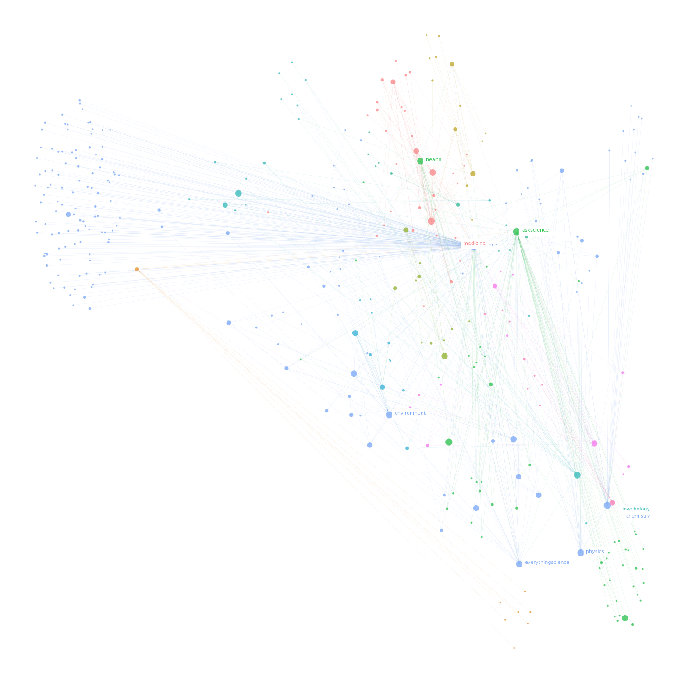
# INTERNATIONAL NEWS + POLITICS
comms[9]
{'57north',
'abetterworldnews',
'accidentalbuzzfeed',
'acteuropa',
'adollarforchange',
'agitation',
'airasiaqz8501',
'airdisasters',
'ajvar',
'albania',
'alicious',
'all_lives_matter',
'alleu',
'allnews',
'allracistjokes',
'altright_online',
'amarequest',
'americansarecowards',
'americunts',
'ameristralia',
'amosyee',
'ankara',
'anonimity',
'anonymousphilosophy',
'antiisis',
'antijapancirclejerk',
'antwerp',
'arepas',
'armenia',
'artsakh',
'aryanskynet',
'asajew',
'asanamerican',
'asianascendance',
'askeurope',
'asksingapore',
'asktrolly',
'ateistisrbije',
'atlantis',
'attackontitangame',
'austronesian',
'autotldr',
'axerbaijan',
'azerbaijan',
'badgeography',
'badislam',
'badminton',
'baeume',
'bahasamelayu',
'ballju',
'band_names',
'bandung',
'bardarbunga',
'basingstoke',
'beeporn',
'bekasi',
'belarus',
'benignexistence',
'bigotryshowcase',
'bih',
'birdlaw',
'birnabrjansdottir',
'bitofnewsbot',
'bitrussia',
'blameamerica',
'bleiburg',
'blubclubsub',
'bogota',
'borgenproject',
'bosnaihercegovina',
'bosnia',
'bratislava',
'brigades',
'brilliantthreads',
'brunei',
'budapest',
'buenzli',
'bulgaria',
'bvbcaralho',
'cabinpressure',
'canadiangraffiti',
'carfree',
'casualracism',
'catalonia',
'catalunya',
'catholic_news',
'chairos',
'civpolitics',
'clathrategun',
'colombia',
'conflictnews',
'corruptionmustfall',
'councilofthesun',
'countrychallenge',
'crashblossoms',
'crete',
'cringapore',
'criticismofislam',
'croatia',
'cropolitika',
'cscopenheartopenmind',
'cuba',
'cyprus',
'czech',
'dancarlin',
'daronmalakian',
'dearfuture',
'deathtoamerikkka',
'debatefeminism',
'debunkworldnews',
'definitelynotrussians',
'directobogota',
'dolphinaut',
'donetsk',
'dontgiveafuckistan',
'dostajebilo',
'dubrovnik',
'dutchshitonreddit',
'eatyourhat',
'ebolapanic',
'editorialcartoons',
'editwhores',
'eesti',
'eeu',
'eldersofzion',
'endbigotry',
'endometriosis',
'epana',
'eradicateislam',
'eritrea',
'erk',
'es',
'esctournament',
'eulaw',
'euphoric',
'eupolitics',
'eurasianeconomicunion',
'euromaidan',
'euromigration',
'europe',
'europeanculture',
'europeanfederalists',
'europeanparliament',
'europeans',
'europecensorship',
'europecirclejerk',
'europelife',
'europemeta',
'europemetameta',
'europes',
'europesjwwatch',
'euros',
'eurovision',
'eurowatch',
'evesjesiennyogien',
'expat',
'expatriated',
'expats',
'expatsingapore',
'expectedsabaton',
'explainlikedonald',
'fabianism',
'fattykimthethird',
'foncsorozo',
'foodmyths',
'foodpolice',
'foreignaffairs',
'freeeuropemeta',
'freeeuropenews',
'frenchielawstudents',
'fridaynewsdump',
'fuck_off',
'fuckyouredits',
'gildstats',
'gingers',
'godwinslaw',
'grammarpolice',
'greece',
'greek',
'greekreddit',
'greenlight2',
'guntrucks',
'hailbitcoin',
'hannover',
'hasbarawatch',
'hatehaters',
'heritage',
'honey',
'hostingnews',
'hukd',
'human_rights',
'humanintereststories',
'humanitarianaid',
'hungarian',
'hungary',
'iamgoingtohellforthis',
'iceland',
'ididnotvoteforbut',
'igotout',
'ikarus3426',
'illallowit',
'indiandrama',
'indiaunbiased',
'indo',
'indomusic',
'indonesia',
'indonesiacirclejerk',
'indonesian',
'indonesiangamers',
'insultingerdogan',
'internationellpolitik',
'isis',
'isisgonewild',
'island',
'istanbul',
'iwantout',
'jailu',
'jakarta',
'jakosampametan',
'jerusalem',
'jidf',
'jidfinaction',
'jrharbor',
'kaernten',
'kaigainohannou',
'karabakhconflict',
'kazakhstan',
'killingisis',
'kittensgame',
'klakinn',
'kowloon',
'kragujevac',
'kritik',
'ksi',
'kurdishcivilwar',
'latinamerica',
'latvia',
'launchers',
'liberta',
'libertarianeurope',
'libertarianhope',
'limburg',
'livecounting',
'livesmatter',
'lotus',
'luxembourg',
'lviv',
'macedonia',
'maduro',
'malaysia',
'malaysianpf',
'manholeporn',
'mapporn',
'mapporncirclejerk',
'mapswithnojersey',
'mapswithouttasmania',
'mapswithoutwi',
'matthewreilly',
'maydan',
'medialaw',
'medieval',
'meetpeople',
'merkelrapeculture',
'metaldadjokes',
'metricmasterrace',
'mh17',
'middleeastern',
'mo4571a',
'modsexposed',
'moldova',
'moldovancrisis',
'mostcanadiancomment',
'mtsgaming',
'muricnevermind',
'musicalbums',
'mykolaiv',
'myschoollunch',
'nato',
'newsbits',
'niceb8m8',
'no_signs',
'noprabowo',
'northatlantictreaty',
'notalocalcrimestory',
'novotvorenice',
'occupy_europe',
'oilfieldtrash',
'oldmaps',
'oldurbanism',
'oradea',
'orangindo',
'ottawanews',
'ottoman',
'paidrussiantrolls',
'palestinianconflict',
'panichistory',
'papertowns',
'pasok',
'passportporn',
'peacepirates',
'penang',
'percapitabragging',
'phrasing',
'pingpongplatypus',
'pissbeuponhim',
'placesg',
'planes',
'pmqs',
'polandaccounting',
'polandball',
'polandballarena',
'polandballbookclub',
'politicsdebate',
'politota',
'polskapoland',
'portugal2',
'portugalcaralho',
'postcardexchange',
'pragmatism',
'prague',
'pridnestrovie',
'procomputertips',
'profoundredditquotes',
'ptt',
'putinsdownfall',
'pyongpang',
'qatar',
'randomactsofburrito',
'realusa',
'reddit_burns',
'redditactivism',
'redditontrump',
'redditorpredicts',
'redditroadrage',
'repetitiveheadline',
'richpeoplehate',
'riga',
'rijeka',
'riptf2',
'rur',
'russia',
'russiahate',
'russianstories',
'russianukrainianwar',
'russiatoday',
'russiawonwwii',
'russophobia',
'rusyn',
'sakartvelo',
'sanescobar',
'sarawak',
'saudiatrocities',
'saudihate',
'serbia',
'serbia_casual',
'serbianman',
'shaokao',
'shex',
'shitageistssay',
'shiteuropeanssay',
'shitimperialistssay',
'shitjidfsays',
'shitlords',
'shitnazbolssay',
'shitpolandballsays',
'shitpoop',
'shitputinsays',
'shitrepublicanssay',
'shitrturkeysays',
'shitslavaboossay',
'shittymapporn',
'shittysocialscience',
'shittysunsets',
'shitwesternerssay',
'singapore',
'singaporecirclejerk',
'singaporefinance',
'siyaset',
'slavaukraine',
'slovakia',
'slovenia',
'snackexchange',
'soad',
'soccercaralho',
'socialismfacts',
'socialistbs',
'socialistmeme',
'soku',
'southamerica',
'spain',
'spamlord',
'spisak',
'srdbeingcirclebroke',
'srpska',
'srsar',
'srsturkey',
'startupscroatia',
'stlouisbluesjerk',
'stopspanking',
'stopttip',
'stupidredditors',
'subreddit_stats',
'suchislifeinmoscow',
'superioreurope',
'systemofadown',
'taberna',
'talesfromthetowyard',
'tangents',
'the_bogdanoff',
'thebaltics',
'therussianbane',
'theukrainians',
'theworstgeneration',
'theyakuza',
'theydidtheeasymath',
'thosezannyjews',
'tigerbelly',
'tillsverige',
'titanic',
'titoism',
'totallybullshit',
'totheground',
'tppdecoder',
'trackingtrump',
'traktorist',
'translatednews',
'transnistria',
'trollxchromosome',
'tropa',
'truevoat',
'trumpgate',
'trumpism',
'tsundereworldleaders',
'turkey',
'turkeysubredditwatch',
'turkichistory',
'turkish',
'turkishcirclejerk',
'ua_antireligion',
'ukraina',
'ukraine',
'ukrainiancirclejerk',
'ukrainianconflict',
'ukrcult',
'ukrnet',
'um3k',
'unasur',
'unbiasedworldnews',
'underreportednews',
'unexpectedciv',
'unexpectedhaiku',
'unheardof',
'untiedkingdom',
'unusualsentences',
'usa',
'vegetablerights',
'vencirclejerk',
'venezolanos',
'visitingiceland',
'vojvodina',
'vollzeit',
'vzla',
'wanderlust',
'watchpeoplebeokay',
'watchpkkdeaths',
'watchwars',
'watchworldnews',
'westabootales',
'whataboutamerica',
'whothefuckcares',
'whovianents',
'windowshelp',
'wolf359',
'worldcrisis',
'worlddisinformation',
'worldnews',
'worldnewsunbiased',
'worldnewswatch',
'worldpowerball',
'writingfertilizer',
'xidnaf',
'yemen',
'yemenicrisis',
'yerevan',
'yishun',
'yurop',
'zagreb',
'zionismwatch',
'znews',
'zuliaman',
'zwolle'}
draw_graph(G_2014.subgraph(comms[9]), 20)
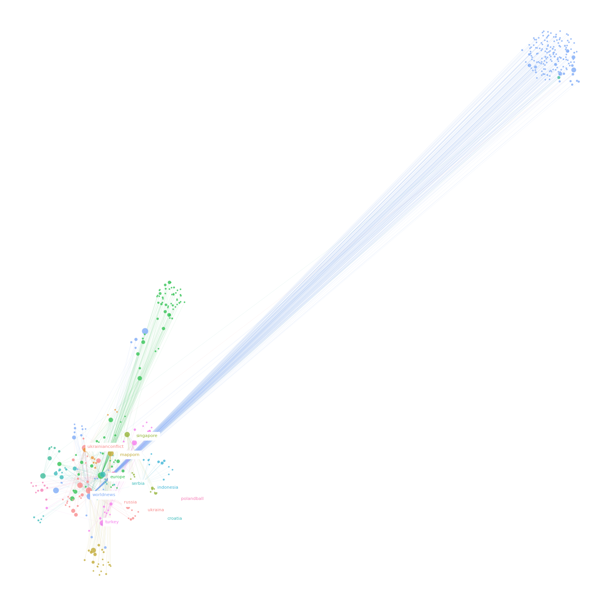
# COMPUTER SCIENCE
comms[10]
{'1p4',
'2048editions',
'2609',
'4519',
'accessibility',
'ada',
'adarkroom',
'advancedcustomfields',
'adventofcode',
'agile',
'aiclass',
'algorithms',
'altjs',
'analytics',
'anchorcms',
'angular',
'angular2',
'angulardart',
'angularjs',
'annoyinonesentence',
'answermarket',
'apache',
'appengine',
'ascii',
'askcompsci',
'askcomputerscience',
'askprogrammers',
'askprogramming',
'asksysadmin',
'asmjs',
'asshathackers',
'assurityagile',
'atom',
'ats',
'atwoodslaw',
'autodidact',
'bangawker',
'barbarianprogramming',
'bauski',
'bestoflizardculture',
'bioinformatics',
'bitbucket',
'bittorrent',
'bluehost',
'bohwaz',
'bootstrap',
'brainfuck',
'businessanalysis',
'butrspilicon0s0tatrn',
'c_language',
'c_programming',
'cakephp',
'careersushi',
'carml',
'cbase',
'cem1790',
'chapel',
'cheatsheets',
'chevres',
'chi',
'cicadalanguage',
'clion',
'clojure',
'clojurescript',
'cloudatcost',
'cloudflare',
'cmvprogramming',
'code',
'codecademy',
'codechallenges',
'codehaiku',
'codelympics',
'codeperformance',
'codereview',
'coderlife',
'coderradio',
'coderversity',
'coding',
'codingbootcamp',
'codingeastereggs',
'codinghumor',
'codinginterview',
'collaboration',
'common_lisp',
'compbio',
'compilebot',
'compilers',
'compsci',
'compscistudents',
'computerscience',
'connectthink',
'contentstrategist',
'cop3502',
'cplusplus',
'cpp',
'cpp14',
'cprog',
'createjs',
'crystal_programming',
'cscareerquestions',
'cscqcirclejerk',
'cseducation',
'csmajors',
'css',
'customersuccess',
'cypherpass',
'd_language',
'daftlabs',
'dailyprogrammer_ideas',
'dancormier',
'dartlang',
'datamining',
'debugging',
'deftruefalse',
'derksnterts',
'developerlinks',
'development',
'devops',
'devopscomic',
'devwars',
'dfw_scala_enthusiasts',
'diyai',
'django',
'djangolearning',
'dojo',
'dotnet30',
'dribbble',
'dylanlang',
'dyvil',
'eclipse',
'ecommerce',
'edi',
'elearning',
'electronjs',
'elm',
'emberjs',
'emoticongore',
'esbio',
'evanrelf',
'exponent',
'fdmgroup',
'fearme',
'fenomenit',
'fifthreich',
'firebase',
'first',
'fluidmechanics',
'forth',
'fortran',
'frameworks',
'frc',
'freecodecamp',
'freeformost',
'freelance',
'freelanceprogramming',
'freestockphotos',
'frontend',
'frostwire',
'fsharp',
'fstar',
'fullstack',
'functional',
'functionalprogramming',
'futurist_entrepreneur',
'gcc',
'genart',
'generalnetworking',
'genomics',
'getaether',
'gifcreators',
'gigglebang',
'girlsgonewired',
'git',
'github',
'gitlab',
'giveusthekarmas',
'gobashing',
'goboardgame',
'gogamedev',
'gohugo',
'golang',
'goodprogramming',
'googleapis',
'googlecirclejerk',
'gophergala2016',
'gradle',
'graph',
'graphql',
'gwt',
'hackastream',
'hackathon',
'haiku',
'haskell',
'haskellgamedev',
'haskellquestions',
'hci',
'heroku',
'hired',
'holidayhole',
'homm_iii',
'hosting',
'html',
'html5',
'html5gamedevs',
'html5games',
'humanresourcemachine',
'humorousreviews',
'hypercrud',
'iamarequest',
'idiomaticpython',
'illustrations',
'impega',
'infrastructurefans',
'instructionaldesign',
'intellijidea',
'interesting_reads',
'internetexplorer',
'iota',
'itsjsonbourne',
'jailang',
'java',
'java_programming',
'javafx',
'javahell',
'javahelp',
'javaone',
'javascript',
'javaserverfaces',
'javatil',
'jbinto',
'jekyll',
'joomlahate',
'journal_club',
'jpgibbs',
'jquery',
'json',
'julia',
'justdontgetit',
'kanban',
'kholdlinks',
'kivy',
'koajs',
'laravel',
'learn_rails',
'learnc',
'learndjango',
'learnjava',
'learnjavascript',
'learnlinux',
'learnphysics',
'learnprogramming',
'learnpython',
'learnwebdev',
'leocoinorg',
'letsdocanvas',
'lggggglcirclejerk',
'linux4developers',
'lisp',
'liveoverflow',
'lolgit',
'loljs',
'lolmysql',
'lolphp',
'lua',
'lumen',
'magento',
'magento2',
'mariadb',
'matlab',
'meanstack',
'mediawiki',
'metapcj',
'meteor',
'microservices',
'mildlygit',
'mithriljs',
'mobilegamingnews',
'moodle',
'msdn',
'mysite',
'nairobilug',
'neovim',
'newlisp',
'ngconf',
'nichesites',
'nim',
'node',
'nojs',
'notwork',
'noveltyaccounts',
'novicecoder',
'npm',
'nucleus',
'numba',
'ocaml',
'omniconservative',
'oopisbad',
'opencl',
'openlang',
'opentoallctfteam',
'openwhispersystems',
'orchestratedchaos',
'osdev',
'osuonlinecs',
'otherinterestingshit',
'p2pdev',
'packt',
'parametric_design',
'parenthesisbot',
'parle',
'parsing',
'patrolx',
'perl',
'perl6',
'phaser',
'php',
'phpbb',
'phphelp',
'phpsec',
'pinkpanther',
'pinoyprogrammer',
'piwik',
'pornindustry',
'powerline',
'prestashop',
'prodmgmt',
'programmerart',
'programmerchat',
'programmercirclejerk',
'programmercringe',
'programmerdadjokes',
'programmerdrama',
'programmerfacepalm',
'programmerhumor',
'programmers',
'programmersgonewild',
'programmertil',
'programming',
'programming_interview',
'programmingbuddies',
'programmingbydoing',
'programmingchallenges',
'programmingcirclejerk',
'programmingforkids',
'programminghelp',
'programminghorror',
'programminglanguages',
'programmingtools',
'projectmanagement',
'prolog',
'prowebdev',
'prowordpress',
'purescript',
'pystats',
'python',
'pythonforexcel',
'rails',
'rdata',
'reactjs',
'reactnative',
'readablecode',
'recruitinghell',
'reddit_folder',
'redlang',
'rednetio',
'redox',
'reduxjs',
'reflexfrp',
'rest',
'rethinkdb',
'reviewpapers',
'rfid',
'rrrrrrruuuuuuuuuuuust',
'rsi',
'ruby',
'ruby_infosec',
'rubyonrails',
'ruhaskell',
'rust',
'rust_gamedev',
'rust_networking',
'saas',
'sametmax',
'scala',
'scratch',
'scrum',
'scrumpracticioners',
'seattleweb',
'securityctf',
'sellvana_marketplace',
'sendgrid',
'serverconfig',
'shitjadensays',
'shitsupergauntletsays',
'shittotesmetabotsays',
'shittyaskchefs',
'shittyprogramming',
'shopify',
'shou',
'sideproject',
'sliceofpython',
'smalltalk',
'snapframework',
'software_design',
'softwareabominations',
'softwarearchitecture',
'softwaredevelopment',
'softwareengineering',
'songsincode',
'springsource',
'startupcirclejerk',
'startups',
'sublimetext',
'symfony',
'sysor',
'systems',
'talesofmidmanagement',
'tcl',
'tdd',
'techanalogies',
'techculture',
'testanythingprotocol',
'theghostofchurch',
'thenewsrightnow',
'theoreticalcs',
'tinycode',
'tiwikwis',
'tmb_circlejerk',
'tretton37',
'tsdotnetlibrary',
'tsscc',
'tumblrtheme',
'twoxtech',
'typescript',
'ucurations',
'ui_design',
'unexpectedemoticon',
'unexpectedrecursion',
'unexpectedsubreddit',
'unikernel',
'upcos',
'upwork',
'urm0m',
'usability',
'userexperience',
'uxresearch',
'vagrant',
'vim',
'vim_magic',
'vimcirclejerk',
'vimgolf',
'vimplugins',
'vps',
'vscode',
'vuejs',
'watchpeoplecode',
'watson',
'wearapps',
'web_advice',
'web_design',
'web_dev',
'web_dev_help',
'web_development',
'web_programming',
'webassembly',
'webaudio',
'webdev',
'webdevelopment',
'webhosting',
'webkit',
'webpack',
'websecurity',
'websitefeedback',
'woocommerce',
'wordpress',
'wordpressplugins',
'wyncode',
'xmonad',
'xna',
'yaas',
'yeoman',
'yourselfyou',
'yushe',
'zapier',
'zetetique',
'zsh'}
draw_graph(G_2014.subgraph(comms[10]), 20)
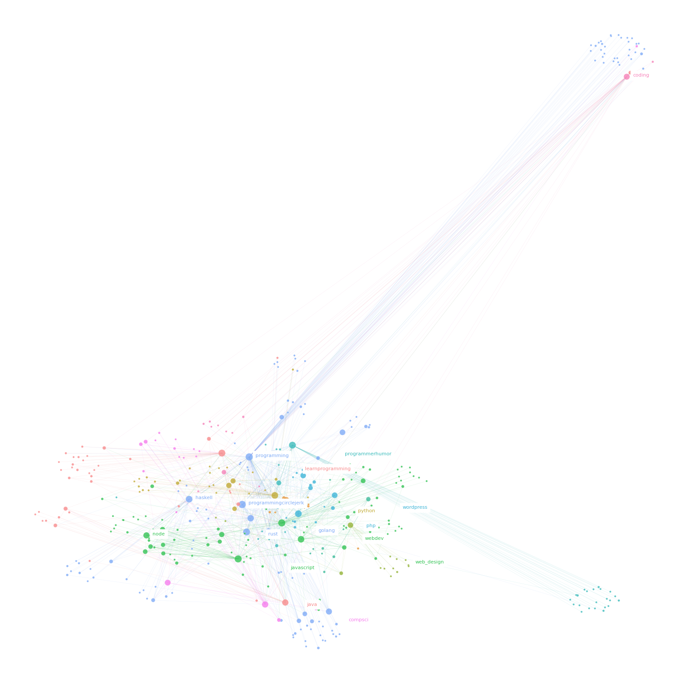
# TOXIC POLITICS
comms[11]
{'adolfhitler',
'adoseofbuckley',
'againsteverysubreddit',
'againsthatesubreddits',
'againstlovesubreddits',
'againstmeansubreddits',
'ahsbrigadewatch',
'aidsskrillex',
'alter_europa',
'alternativefacts',
'alternativeright',
'altfacts',
'altism',
'altright',
'altrightwatch',
'anti_establishment',
'anti_trump',
'anystories',
'askberniesupporters',
'askthe_donald',
'asktrumpsupporters',
'assangeproofoflife',
'awpgod1337',
'ban_the_donald',
'bangkokpostauto',
'banislam',
'bannedfromthe_donald',
'banthe_donald',
'basedhitlernews',
'basket_of_deplorables',
'battleofthesexes',
'berlintruckattack',
'bernie_sanders',
'berniegutman',
'bernitdown',
'berntheconvention',
'bestofmeta',
'bestpresidenttrump',
'bigly',
'bikersfortrump',
'billnyesucks',
'bipartisandebate',
'blackcrimematters',
'blackoutnews',
'blm_are_terrorists',
'bombshell_on_target',
'both_sides',
'bptcirclejerk',
'brainwashedamerica',
'breastenvy',
'brettkeanetrolling',
'brightonvapeclub',
'btfo',
'btfoposts',
'buildawall',
'buruieni',
'cancerousmods',
'cfleaks',
'chapotraphouse',
'chicagoviolence',
'cigarettesmokerhate',
'clintonfoundation',
'clintonshills',
'cmiall',
'cnnleaks',
'consequentialism',
'conspiratardo',
'creepypmsing',
'crimigrants',
'cucknation',
'cuntforpresident',
'de_thierry',
'debatealtright',
'debatemonarchy',
'debatethedonald',
'deepmolewire',
'delete_the_donald',
'dicksoutforpepe',
'dilbert',
'donald',
'donaldandhobbes',
'donaldishypocrite',
'donaldtrumpsucks',
'donaldvshillary',
'downwiththedonald',
'drawmuhammad',
'dropgoogle',
'drumpf',
'drunkenpeasants',
'dumptrump',
'dylannroofinnocent',
'echochamber',
'election2016',
'elevators',
'engineerpoet',
'enoughantifaspam',
'enoughbernistaspam',
'enoughdonaldspam',
'enoughfakenewsspam',
'enoughfakeoutrage',
'enoughhillhate',
'enoughkissingerspam',
'enoughleftistspam',
'enoughsandersspam',
'enoughsandersspam2',
'enought_d',
'enoughtrumpspam',
'enoughtrumpspamspam',
'entrumpreneurs',
'esteban_santiago',
'etarted',
'etssucks',
'europeannationalism',
'europeanpeoples',
'exmuslimpolitics',
'fakeflagger',
'fakenews',
'fakenews_',
'fellowfrenchmen',
'finnishgendercritical',
'freedompol',
'freeworldnews',
'frexitofficial',
'freyaslight',
'fuck_islam',
'fuckcomey',
'fuckthealtright',
'futureschoolshooters',
'gaysfortrump',
'goldenshowers',
'googlecensorship',
'hamiltonelectors',
'harambememeisdead',
'harbinhotsprings',
'harryenten',
'hatesubredditoftheday',
'hatesubsinaction',
'hawkmasterpro',
'headstrong',
'hillary2016',
'hillary_clinton',
'hillaryclingon',
'hillaryclinton',
'hillaryforamerica',
'hillaryforjail',
'hillaryhealth',
'hillarymeltdown',
'hillaryshealth',
'holdmygolfclub',
'hottiesforclinton',
'hottiesfortrump',
'humantrafficking',
'hwndu_highlights',
'iamnotracistbut',
'identityirelandforum',
'ifthelordtarries',
'im14andthisispolitics',
'imbannedfrom',
'impeachtrump',
'inactivereddits',
'inceldiscussions',
'infowarsdotcom',
'internationalnews',
'internethitlers',
'invadercrimesmatter',
'jebbush',
'jiujitsu',
'justbourgeoisiethings',
'justiceforpewdiepie',
'kasichforpresident',
'kekism',
'kekworld',
'knownedge',
'lacortenews',
'laredo',
'le_pawn',
'le_pen',
'letstalktrump',
'liberalfeminism',
'liberalregressives',
'liberalstupidity',
'liberalviolence',
'literally_1984',
'magajuana',
'march_against_trump',
'marchagainsthillary',
'marchagainstrump',
'marchagainsttrump',
'marco_rubio',
'marilyn_manson',
'markdice',
'mcmullin',
'mediacriticism',
'memeyourenthusiasm',
'mensfashiontrend',
'miloforprison',
'mockredditadmins',
'modernconservative',
'mosqueshooting',
'mr_pence',
'mr_trump',
'muslimpeoplehate',
'muslimsinthenews',
'myga',
'nazi',
'nevertrump',
'newgovernment',
'newschannel',
'niglets',
'nimbleamerica',
'nofilternews',
'nonwhite',
'northamerican',
'nothing2hide',
'notmypresident',
'notmyprotest',
'notrump',
'obamalies',
'officialdp',
'openandhonest',
'paindeergames',
'panjandrum',
'patriotsftw',
'peaceful_protest',
'pedantic',
'physical_removal',
'pinochet',
'pizzagateawareness',
'plebbit',
'political_bullshit',
'politicalconspiracy',
'politicscensorship',
'postelectionrage',
'praisekek',
'pure_trump',
'pussypass',
'putin',
'putinsbitch',
'quarantine_the_donald',
'randomactsoftrump',
'rapekink',
'rare_pepes',
'real_anarchism',
'redacted',
'redditcensors',
'redpillatheists',
'redpilldrops',
'religion_of_kek',
'removalseuropean',
'replytothe_donald',
'repost_the_donald',
'rightqueer',
'rightwinglgbt',
'ripgop',
'rotherham',
's4t',
'sacevents',
'sacramentopede',
'samoa',
'sandersrefugees',
'selfawarewolves',
'sethrich',
'sextwister',
'shit_ets_says',
'shitisms',
'shitobamasays',
'shitthe_donaldsays',
'shittybeerpours',
'showertoughts',
'sjw_hate',
'sjwhate',
'sjwsontheright',
'slushfund',
'slutsfortrump',
'so_il_stopsoros',
'soros',
'sorosforprison',
'sorosinaction',
'specialforces',
'spezgate',
'starcucks',
'stonetear',
'stop_soros',
'stoptrumpatallcosts',
'stss',
'studsfortrump',
'supermods',
'superweeniehutjunior',
'taaofficial',
'takebackva',
'talktoeachother16',
'tankie',
'tarandfeathers',
'tasmanguard',
'td_uncensored',
'teh_dahnald',
'tenyearsagoonreddit',
'terriblechillarymemes',
'terroristseverywhere',
'tge_donald',
'thanksobongo',
'thanksspez',
'that_happened',
'the__hillary',
'the_berndown',
'the_book',
'the_deplorables',
'the_dinald',
'the_donald',
'the_donald_2',
'the_donald_2016',
'the_donald_2020',
'the_donald_ca',
'the_donald_circlejerk',
'the_donald_lol',
'the_donald_meta',
'the_donald_mnyga',
'the_donald_news',
'the_donald_texas',
'the_donald_tv',
'the_donald_vs_reason',
'the_donaldaudiovisual',
'the_donaldbookclub',
'the_donaldunleashed',
'the_duhnald',
'the_dumbass',
'the_duped',
'the_europe',
'the_farage',
'the_filtered_donald',
'the_frauke',
'the_gowdy',
'the_hofer',
'the_italia',
'the_mattis',
'the_meltdown',
'the_mike',
'the_milo',
'the_nehlen',
'the_uncensored_donald',
'the_wilders',
'the_wins',
'theamazingatheist',
'thebiblereloaded',
'thedangerousfaggot',
'thedonald',
'thedonald_bestof',
'thedonaldbestof',
'thedonaldmemedump',
'thee_donald',
'theevidence',
'themodssaidthat',
'thenewright',
'theonion',
'therightboycott',
'therightstuff',
'thetrueright',
'theunderbelly',
'theyactuallybelieveit',
'thisisnotagame',
'thisisthetruth',
'tinyhandstrump',
'tinytrump',
'tinytrumps',
'tolerantleft',
'tommysotomayor',
'topfagsofreddit',
'topofreddit',
'trendingreddits',
'triggeredsnowflakes',
'trueberniesupporters',
'truecapitalistradio',
'truecels',
'truesexypizza',
'trump',
'trump_fashions',
'trump_god',
'trump_legal',
'trump_maga',
'trump_the_implosion',
'trump_train',
'trumpbabes',
'trumpcalifornia',
'trumpcolorado',
'trumpconnecticut',
'trumpcringe',
'trumpforprison',
'trumpgold',
'trumpgret',
'trumpinauguration',
'trumplicans',
'trumplivesmatter',
'trumpmichigan',
'trumpminnesota',
'trumpnewjersey',
'trumppa',
'trumppennsylvania',
'trumppersonals',
'trumpspam',
'trumpspamvsthedonald',
'trumpsshitlist',
'trumputah',
'trumpversuschrist',
'trumpwisconsin',
'tuck_frump',
'tucker_carlson',
'turboswagengaged',
'uncensorednews',
'uncensorednewssucks',
'usyd',
'vent',
'veryfakenews',
'violentleft',
'wallsfortrump',
'weisssturm',
'whataboutism',
'whatsmyideology',
'whereisbenswann',
'whoaretherothschilds',
'womenfortrump',
'worthwhilecontent',
'yourestupidquitit',
'zuckforpresident'}
draw_graph(G_2014.subgraph(comms[11]), 20)
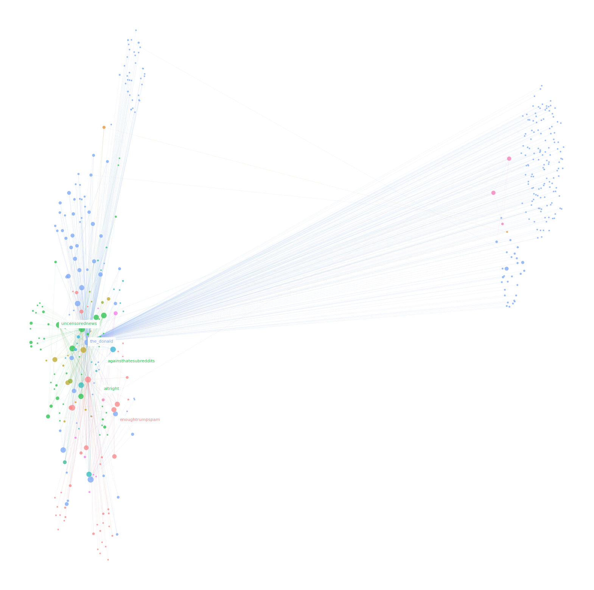
# CRYPTO
comms[12]
{'21dotco',
'abstergoindustries',
'acceptbitcoin',
'acceptingbtc',
'actuallygoodnews',
'adviceanlmals',
'aerocoin',
'altcointip',
'appinventor',
'applepay',
'argenbitcoin',
'argenpool',
'auscoin',
'austinbtc',
'austinmeshnet',
'autruche',
'badinvesting',
'bazaarmarkets',
'bcbc',
'benjamins',
'benlawsky',
'best_of_crypto',
'bestof2013',
'bestofbitcoin',
'betmoose',
'betterbitcoin',
'bfxvictims',
'bilderberg',
'bitask',
'bitcache',
'bitcloud',
'bitcoin',
'bitcoin4games',
'bitcoin_ancap',
'bitcoin_censorship',
'bitcoin_core_dev',
'bitcoin_elitism',
'bitcoin_greece',
'bitcoin_news',
'bitcoin_qi',
'bitcoin_singapore',
'bitcoin_unmoderated',
'bitcoinaus',
'bitcoinaustin',
'bitcoinaustralia',
'bitcoinball',
'bitcoinbe',
'bitcoinbeer',
'bitcoinbeg',
'bitcoinbeginners',
'bitcoinbitching',
'bitcoinbums',
'bitcoinbusiness',
'bitcoinca',
'bitcoinch',
'bitcoincharity',
'bitcoincirclejerk',
'bitcoincolombia',
'bitcoincuredmycancer',
'bitcoinde',
'bitcoindev',
'bitcoindevelopers',
'bitcoindiscussion',
'bitcoindk',
'bitcoindrama',
'bitcoines',
'bitcoinflipside',
'bitcoinfrance',
'bitcoinfriendly',
'bitcoingambling',
'bitcoingiveaways',
'bitcoinhardforks',
'bitcoinhistory',
'bitcoininternational',
'bitcoinis',
'bitcoinlaw',
'bitcoinlibertarians',
'bitcoinlightning',
'bitcoinmaximalists',
'bitcoinmeetups',
'bitcoinmemes',
'bitcoinmex',
'bitcoinmini',
'bitcoinmining',
'bitcoinmtl',
'bitcoinmusic',
'bitcoinno',
'bitcoinprivacy',
'bitcoinpuzzles',
'bitcoinsaltlakecity',
'bitcoinscammers',
'bitcoinseattle',
'bitcoinsec',
'bitcoinserious',
'bitcoinstocks',
'bitcoinsuomi',
'bitcoinswe',
'bitcointechnology',
'bitcointhailand',
'bitcointhecommunity',
'bitcointip',
'bitcointippers',
'bitcointoronto',
'bitcointradershq',
'bitcoinuk',
'bitcoinveterans',
'bitcoinvzla',
'bitcoinwallet',
'bitconned',
'bitexla',
'bitfantasy',
'bitfinexcal',
'bitfloored',
'bithalo',
'bitjell',
'bitmeme',
'bitmessage',
'bitrated',
'bitrevolution',
'bitru',
'bitstamp',
'bittippers',
'bitwars',
'bkkbtc',
'blackcoin',
'blockbin',
'blockchain',
'blockchains',
'blockchainstartups',
'blockchaintech',
'blockio',
'blockseer',
'blockstack',
'bostonmeshnet',
'brasilbitcoin',
'btc_reviews',
'btcbtv',
'btcgreece',
'btcjam',
'btcmarketscirclejerk',
'btcnews',
'btcscamwatchdog',
'btctradingsignals',
'buttbrigade',
'buttcoinrebooted',
'canadianfuturistparty',
'carolinabitcoin',
'casualbitcoin',
'ccc',
'changetip',
'churchofsatoshi',
'cjdns',
'coin_a_based',
'coinbase',
'coinbasesupport',
'coindev',
'coindurp',
'coinrx',
'coinsortium',
'cointelegraph',
'coloredcoin',
'constipated',
'copay',
'counterparty_xcp',
'cryptards',
'crypto_bot',
'cryptocurrencies',
'cryptocurrency_ja',
'cryptocurrencylive',
'cryptodev',
'cryptodro',
'cryptofanfiction',
'cryptopia',
'cryptortrust',
'cuecat',
'cultofsatoshi',
'currencydigital',
'currencyporn',
'daniele',
'darkcoinmarket',
'darknetplan',
'decentralizeweb',
'defcoin',
'definitelyacult',
'denverbitcoin',
'depra',
'digitalcomicsales',
'digitalnote',
'dogecoinserious',
'doitforthecoin',
'dominica',
'drkcoin',
'drkcoinmining',
'dropbox',
'dropzone',
'earnbitcoin',
'econopunk',
'efreebies',
'electrum',
'els_test',
'eternalbrotherhood',
'eubazaar',
'exscudo',
'ferengialliance',
'film_photo',
'firstglobalcredit',
'freebitcoin',
'freebits',
'freedombox',
'freemontanaproject',
'freifunk',
'fuckhead',
'gameforbits',
'gatehub',
'getgems',
'getpimp',
'girlsgonebitcoin',
'gotuckyourbelt',
'gridcoin',
'gridcoinjobs',
'hailbitcore',
'hyperboria',
'iameuphoric',
'ibwtofficial',
'icann',
'iiipercent',
'iphones4bitcoins',
'isactuallygoodnews',
'isleofman',
'jaxbitcoin',
'jobs4bitcoins',
'joinmarket',
'joshgarzaisafraud',
'justdice',
'justthebitcointip',
'karmacoverage',
'keepkey',
'kialara',
'kibo',
'kraken',
'ledgertech',
'lighthouseprojects',
'litecoinprojects',
'livingonbitcoin',
'localbitcoins',
'lorawan',
'lunarbets',
'madmoneymachine',
'madnet',
'maidsafe',
'mastercoin',
'meganet',
'memeplus',
'meshnet',
'metaredditcancerjerk',
'midwestbitcoin',
'migros',
'monetas',
'moneylaundering',
'morphis',
'mtgoxinsolvency',
'mtred',
'muchbitcoin',
'muslimsforcrypto',
'nakedbitcoins',
'namecoin',
'neobee',
'neology',
'newbitcoinshop',
'newsbeard',
'ninnippus',
'nitrotype',
'notacceptingbitcoin',
'nsl',
'nubits',
'nycbitcoin',
'nzbitcoin',
'obitcoin',
'omni',
'onlinestreamingsites',
'opentransactions',
'paralelnipolis',
'paycoin',
'peerbox',
'peercoin',
'peershares',
'piperwallet',
'pixuleco',
'pokertravis',
'popcoin',
'portlandmeshnet',
'privateblockchain',
'projectskyhook',
'protiphq',
'purseio',
'quora',
'rad_decentralization',
'rbt',
'redditbot',
'remitano',
'ripple',
'ripplers',
'rippletalk',
'russiangridcoin',
'russianimmersion',
'saltcityminers',
'santaclara',
'satoshistories',
'scamalertteam',
'selfaware',
'seniorcitizens',
'seveneves',
'seventhcontinent',
'sexy_saffron',
'shiftnrg',
'shitaquentsays',
'shitbitcoinhaterssay',
'shitcoin',
'shittyanalogies',
'shittyaskbitcoin',
'shrug',
'slushpool',
'smarttv',
'sorryforyourloss',
'sproutscryptocurrency',
'stlcoin',
'stoffel',
'storj',
'streamium',
'streamiumlive',
'strongholdkingdoms',
'subricharddawkins',
'supercoin',
't:2112',
'teamredditmining',
'technoanarchy',
'technologyuncensored',
'teksavvy',
'tendermint',
'testingtesting1234321',
'theforkening',
'themostinterestingman',
'thisfuckingawesome',
'tiphound',
'tipmywork',
'trezor',
'trucoin',
'ukiyoe',
'unobtanium',
'uwf',
'vaporstation',
'viacoin',
'vincent21212',
'virtualminingcoin',
'vnet',
'vos',
'webstuff',
'westernunion',
'whalebitcointradelogs',
'worldcryptonetwork',
'wowcharts',
'writingforbitcoin',
'xrptrader',
'yrc',
'zenminer',
'zeronet',
'zidisha'}
draw_graph(G_2014.subgraph(comms[12]), 10)
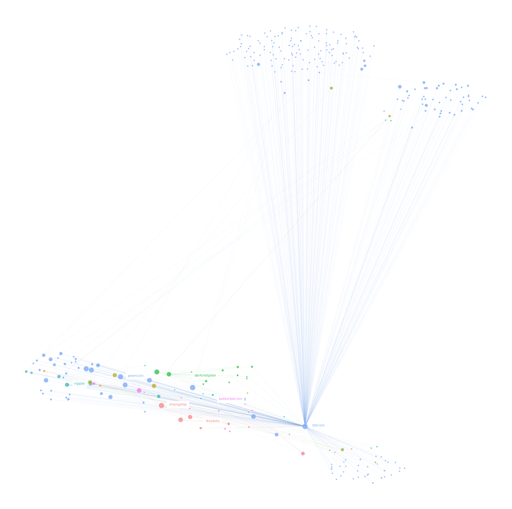
While not all communities found seem to make sense on first glance, several in the top 15 were very clearly able to be grouped by topic - the Louvian community detection appears to be effective on this graph, at least somewhat.#
5 - Negative Traffic#
Visual representation of negative traffic links#
draw_graph(G_neg_2014, 100)
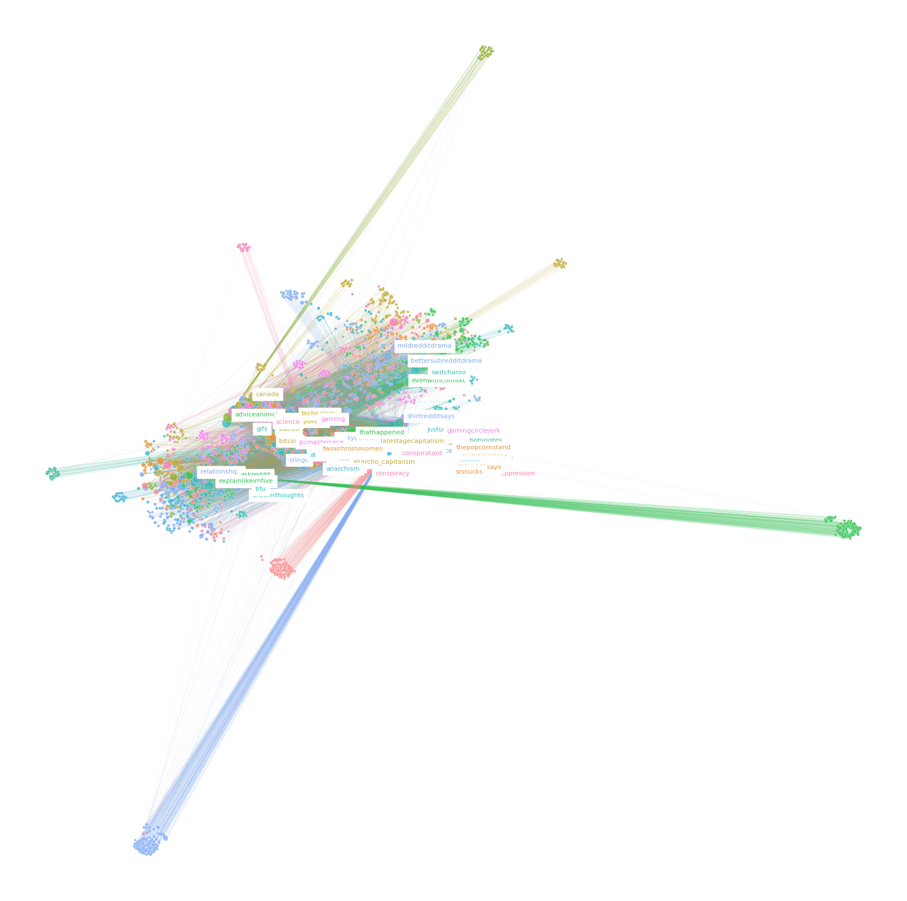
Looking for the most ‘toxic’ communities#
out_degree_centrality_negative = dict(nx.out_degree_centrality(G_neg_2014))
in_degree_centrality_negative = dict(nx.in_degree_centrality(G_neg_2014))
out_degree_centrality_all = dict(nx.out_degree_centrality(G_2014))
in_degree_centrality_all = dict(nx.in_degree_centrality(G_2014))
centrality_df = pd.DataFrame([out_degree_centrality_negative, in_degree_centrality_negative, out_degree_centrality_all, in_degree_centrality_all])
centrality_df = centrality_df.T
centrality_df = centrality_df.fillna(0)
centrality_df.columns = ['negative_outgoing','negative_incoming','all_outgoing','all_incoming']
centrality_df['outgoing_ratio'] = centrality_df['negative_outgoing']/centrality_df['all_outgoing']
centrality_df['incoming_ratio'] = centrality_df['negative_incoming']/centrality_df['all_incoming']
centrality_df = centrality_df[centrality_df['negative_outgoing'] > 0.001]
avg_all_ratio = centrality_df['incoming_ratio'].mean()
centrality_df['mean_incoming_ratio'] = avg_all_ratio
centrality_df['% difference from mean ratio'] = 100 *(centrality_df['incoming_ratio'] - avg_all_ratio)/avg_all_ratio
centrality_df = centrality_df.sort_values('outgoing_ratio',ascending=False)
centrality_df = centrality_df.dropna()
Most toxic communities by ratio of negative/all posts originating from that community#
centrality_df.head(20)
| negative_outgoing | negative_incoming | all_outgoing | all_incoming | outgoing_ratio | incoming_ratio | mean_incoming_ratio | % difference from mean ratio | |
|---|---|---|---|---|---|---|---|---|
| brockturnerinnocent | 0.001204 | 0.000328 | 0.000222 | 0.000055 | 5.426145 | 5.919431 | 1.356286 | 336.444251 |
| ebolahoax | 0.001533 | 0.000000 | 0.000351 | 0.000092 | 4.361686 | 0.000000 | 1.356286 | -100.000000 |
| peoplefuckingdying | 0.001204 | 0.000328 | 0.000277 | 0.000555 | 4.340916 | 0.591943 | 1.356286 | -56.355575 |
| shitsocialismsays | 0.002518 | 0.000109 | 0.000610 | 0.000166 | 4.125664 | 0.657715 | 1.356286 | -51.506194 |
| publichealthwatch | 0.013793 | 0.000985 | 0.003421 | 0.000388 | 4.031612 | 2.536899 | 1.356286 | 87.047536 |
| bestofpoutrageculture | 0.001861 | 0.000000 | 0.000481 | 0.000018 | 3.870397 | 0.000000 | 1.356286 | -100.000000 |
| bnestrong | 0.002299 | 0.000657 | 0.000610 | 0.000481 | 3.766910 | 1.366022 | 1.356286 | 0.717904 |
| straya | 0.002627 | 0.000876 | 0.000721 | 0.000388 | 3.642727 | 2.255021 | 1.356286 | 66.264477 |
| leftwithsharpedge | 0.003503 | 0.000438 | 0.000980 | 0.000092 | 3.573996 | 4.735545 | 1.356286 | 249.155401 |
| amrsucks | 0.003503 | 0.000438 | 0.000980 | 0.000185 | 3.573996 | 2.367772 | 1.356286 | 74.577700 |
| subredditdrama | 0.170443 | 0.025616 | 0.049173 | 0.011799 | 3.466173 | 2.171076 | 1.356286 | 60.075164 |
| drama | 0.074658 | 0.008539 | 0.021803 | 0.004087 | 3.424132 | 2.089211 | 1.356286 | 54.039147 |
| againstkarmawhores | 0.010947 | 0.000109 | 0.003255 | 0.000074 | 3.363313 | 1.479858 | 1.356286 | 9.111063 |
| srssucks | 0.017187 | 0.003503 | 0.005160 | 0.001794 | 3.331006 | 1.952802 | 1.356286 | 43.981609 |
| againsthatesubreddits | 0.013027 | 0.004488 | 0.003995 | 0.002145 | 3.261168 | 2.092213 | 1.356286 | 54.260468 |
| vaccinemyths | 0.001642 | 0.000328 | 0.000518 | 0.000092 | 3.171124 | 3.551658 | 1.356286 | 161.866551 |
| fuckthealtright | 0.001861 | 0.001095 | 0.000592 | 0.000684 | 3.144698 | 1.599846 | 1.356286 | 17.957906 |
| shiteuropeanssay | 0.004269 | 0.000219 | 0.001387 | 0.000037 | 3.078104 | 5.919431 | 1.356286 | 336.444251 |
| metacancersubdrama | 0.003065 | 0.000109 | 0.000999 | 0.000111 | 3.069334 | 0.986572 | 1.356286 | -27.259292 |
| assholes | 0.001970 | 0.000438 | 0.000647 | 0.000074 | 3.044279 | 5.919431 | 1.356286 | 336.444251 |
Most toxic communities by quantity of negative posts from that community (out degree)#
centrality_df = centrality_df.sort_values('negative_outgoing',ascending=False)
centrality_df.head(20)
| negative_outgoing | negative_incoming | all_outgoing | all_incoming | outgoing_ratio | incoming_ratio | mean_incoming_ratio | % difference from mean ratio | |
|---|---|---|---|---|---|---|---|---|
| subredditdrama | 0.170443 | 0.025616 | 0.049173 | 0.011799 | 3.466173 | 2.171076 | 1.356286 | 60.075164 |
| bestof | 0.119431 | 0.009524 | 0.057532 | 0.007286 | 2.075892 | 1.307082 | 1.356286 | -3.627792 |
| drama | 0.074658 | 0.008539 | 0.021803 | 0.004087 | 3.424132 | 2.089211 | 1.356286 | 54.039147 |
| botsrights | 0.041817 | 0.000766 | 0.014517 | 0.000499 | 2.880538 | 1.534667 | 1.356286 | 13.152213 |
| circlebroke2 | 0.037876 | 0.001861 | 0.012631 | 0.001036 | 2.998716 | 1.796970 | 1.356286 | 32.492005 |
| shitpost | 0.036891 | 0.001423 | 0.014462 | 0.000721 | 2.550957 | 1.973144 | 1.356286 | 45.481417 |
| shitamericanssay | 0.028790 | 0.003612 | 0.014184 | 0.001923 | 2.029740 | 1.878281 | 1.356286 | 38.487118 |
| shitredditsays | 0.028462 | 0.007225 | 0.016256 | 0.003514 | 1.750912 | 2.056223 | 1.356286 | 51.606950 |
| evenwithcontext | 0.026710 | 0.000000 | 0.008951 | 0.000018 | 2.984176 | 0.000000 | 1.356286 | -100.000000 |
| shitstatistssay | 0.024849 | 0.001970 | 0.010541 | 0.000962 | 2.357387 | 2.049034 | 1.356286 | 51.076856 |
| the_donald | 0.024302 | 0.022332 | 0.012779 | 0.016422 | 1.901756 | 1.359869 | 1.356286 | 0.264220 |
| worstof | 0.024302 | 0.001642 | 0.008045 | 0.000536 | 3.020951 | 3.061775 | 1.356286 | 125.747026 |
| fitnesscirclejerk | 0.022879 | 0.000547 | 0.010097 | 0.000407 | 2.265863 | 1.345325 | 1.356286 | -0.808125 |
| bettersubredditdrama | 0.021675 | 0.000000 | 0.008340 | 0.000018 | 2.598774 | 0.000000 | 1.356286 | -100.000000 |
| topmindsofreddit | 0.019704 | 0.002956 | 0.008821 | 0.001368 | 2.233747 | 2.159792 | 1.356286 | 59.243173 |
| gamingcirclejerk | 0.018610 | 0.000547 | 0.006750 | 0.000388 | 2.756995 | 1.409388 | 1.356286 | 3.915298 |
| shitliberalssay | 0.018172 | 0.001533 | 0.008137 | 0.000814 | 2.233240 | 1.883455 | 1.356286 | 38.868625 |
| srssucks | 0.017187 | 0.003503 | 0.005160 | 0.001794 | 3.331006 | 1.952802 | 1.356286 | 43.981609 |
| badphilosophy | 0.017077 | 0.002080 | 0.009228 | 0.001535 | 1.850564 | 1.355050 | 1.356286 | -0.091075 |
| thepopcornstand | 0.017077 | 0.000766 | 0.007157 | 0.000314 | 2.386127 | 2.437413 | 1.356286 | 79.712339 |
Looking at proportion of negative traffic driven by top 10 negative communities#
toxic_subs = list(centrality_df.head(10).index)
num_edges_in_toxic_set = 0
num_edges_in_normal_set = 0
for node in toxic_subs:
num_edges_in_toxic_set += G_neg_2014.out_degree(node)
num_edges_in_normal_set += G_2014.out_degree(node)
total_negative_links = len(G_neg_2014.edges)
total_all_links = len(G_2014.edges)
total_num_communities = len(G_2014.nodes)
print('% of negative posts made by top 10 negative subreddits: ' + str((100*num_edges_in_toxic_set/total_negative_links)))
print('Those communities make up ' + str((10/total_num_communities)) + ' % of all communities in the dataset (' + str(total_num_communities) +' in set)')
print('% of all posts made by those same 10 negative subreddits: ' + str((100*num_edges_in_normal_set/total_all_links)))
% of negative posts made by top 10 negative subreddits: 18.41952353282975
Those communities make up 0.0001849283402681461 % of all communities in the dataset (54075 in set)
% of all posts made by those same 10 negative subreddits: 5.067889876997513
Looking at relationship between outgoing and incoming negative traffic#
X = centrality_df['outgoing_ratio']
y = centrality_df['incoming_ratio']
X_train, X_test, y_train, y_test = train_test_split(X, y, test_size=0.33)
x_train= X_train.values.reshape(-1, 1)
x_test = X_test.values.reshape(-1, 1)
reg = LinearRegression().fit(x_train, y_train)
predicted = reg.predict(x_test)
# Weak r2 but still positive relationship
r2_score(y_test, predicted)
0.11762698432029772
centrality_df.plot.scatter(x='outgoing_ratio',y='incoming_ratio',c='DarkBlue')
plt.show()
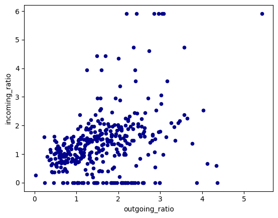
There is a small positive correlation between outgoing and incoming negative traffic, suggesting that subreddit communities spreading hate are also receiving it.#
6 - 2014 vs. 2023#
Need to take same nodeset in both datasets for worthwhile comparasion#
nodeset = set()
nodeset_2014 = set(data_2014['SOURCE_SUBREDDIT'].unique()).union(set(data_2014['TARGET_SUBREDDIT']))
nodeset_2023 = set(data_2023['SOURCE_SUBREDDIT'].unique()).union(set(data_2023['TARGET_SUBREDDIT']))
nodeset = nodeset_2014.intersection(nodeset_2023)
adjusted_2014_data = data_2014[(data_2014['SOURCE_SUBREDDIT'].isin(nodeset))&(data_2014['TARGET_SUBREDDIT'].isin(nodeset))]
adjusted_2023_data = data_2023[(data_2023['SOURCE_SUBREDDIT'].isin(nodeset))&(data_2023['TARGET_SUBREDDIT'].isin(nodeset))]
new_G_2014 = make_di_graph(adjusted_2014_data)
new_G_2023 = make_di_graph(adjusted_2023_data)
draw_graph(new_G_2014, 50)
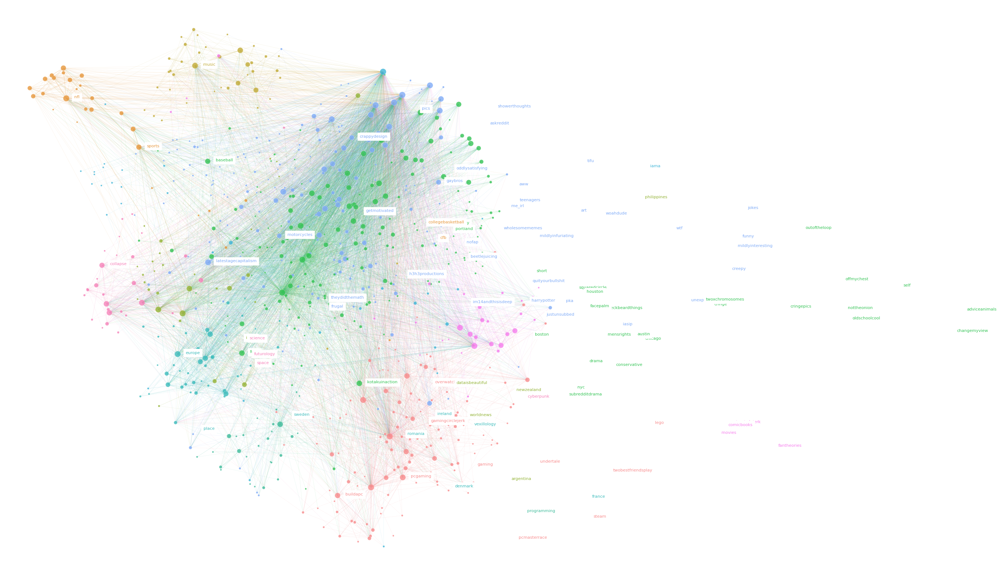
draw_graph(new_G_2023, 5)
/Users/claramoore/Desktop/VSCode_Projecrs/TestingStuff/venv/lib/python3.10/site-packages/graspologic/embed/base.py:199: UserWarning: Input graph is not fully connected. Results may notbe optimal. You can compute the largest connected component byusing ``graspologic.utils.largest_connected_component``.
warnings.warn(msg, UserWarning)
nx.is_weakly_connected(new_G_2014)
False
nx.is_weakly_connected(new_G_2023)
False
largest_cc_2014 = max(nx.weakly_connected_components(new_G_2014), key=len)
largest_cc_2014 = new_G_2014.subgraph(largest_cc)
largest_cc_2023 = max(nx.weakly_connected_components(new_G_2023), key=len)
largest_cc_2023 = new_G_2023.subgraph(largest_cc)
centrality_2014 = dict(nx.degree(new_G_2014))
sorted_centrality_2014 = {k: v for k, v in sorted(centrality_2014.items(), key=lambda item: item[1], reverse=True)}
centrality_2023 = dict(nx.degree(new_G_2023))
sorted_centrality_2023 = {k: v for k, v in sorted(centrality_2023.items(), key=lambda item: item[1], reverse=True)}
sorted_centrality_2014
{'subredditdrama': 689,
'funny': 533,
'iama': 526,
'askreddit': 479,
'pics': 470,
'gaming': 415,
'drama': 353,
'wtf': 287,
'theydidthemath': 266,
'pcmasterrace': 255,
'worldnews': 253,
'conspiracy': 242,
'movies': 236,
'mildlyinteresting': 219,
'science': 213,
'technology': 208,
'dataisbeautiful': 183,
'trees': 180,
'politics': 179,
'adviceanimals': 166,
'latestagecapitalism': 161,
'showerthoughts': 158,
'india': 151,
'leagueoflegends': 150,
'music': 149,
'shitliberalssay': 148,
'aww': 143,
'gamingcirclejerk': 139,
'diy': 137,
'dota2': 136,
'books': 132,
'cringe': 130,
'tifu': 129,
'mensrights': 125,
'europe': 124,
'nottheonion': 123,
'twoxchromosomes': 123,
'programming': 120,
'dogecoin': 119,
'television': 118,
'globaloffensive': 118,
'beetlejuicing': 117,
'soccer': 117,
'sports': 116,
'nba': 113,
'nfl': 111,
'justneckbeardthings': 111,
'quityourbullshit': 110,
'food': 109,
'squaredcircle': 109,
'unexpected': 108,
'creepy': 107,
'drugs': 105,
'overwatch': 105,
'futurology': 105,
'space': 104,
'bicycling': 103,
'sysadmin': 103,
'lifeprotips': 102,
'france': 102,
'cars': 102,
'socialism': 101,
'jokes': 100,
'oldschoolcool': 99,
'me_irl': 97,
'justunsubbed': 97,
'legaladvice': 95,
'woahdude': 92,
'art': 92,
'whatisthisthing': 91,
'pokemon': 90,
'kotakuinaction': 89,
'tf2': 88,
'travel': 87,
'motorcycles': 86,
'ireland': 85,
'crappydesign': 85,
'buildapc': 83,
'de': 83,
'whowouldwin': 83,
'moviescirclejerk': 82,
'anime': 82,
'sweden': 82,
'personalfinance': 81,
'pcgaming': 80,
'getmotivated': 80,
'smashbros': 78,
'minecraft': 78,
'oddlysatisfying': 77,
'hockey': 76,
'changemyview': 76,
'nyc': 75,
'kappa': 73,
'cyberpunk': 73,
'magictcg': 72,
'hearthstone': 70,
'portland': 70,
'cfb': 70,
'steam': 70,
'fantheories': 70,
'cringepics': 69,
'mechanicalkeyboards': 69,
'teenagers': 68,
'mildlyinfuriating': 67,
'newzealand': 67,
'military': 67,
'christianity': 66,
'dnd': 66,
'romania': 66,
'denmark': 66,
'undertale': 66,
'pka': 64,
'houston': 64,
'gameofthrones': 64,
'philippines': 64,
'argentina': 64,
'place': 64,
'outoftheloop': 63,
'chicago': 63,
'collapse': 63,
'nofap': 63,
'offmychest': 63,
'h3h3productions': 63,
'facepalm': 62,
'vexillology': 62,
'gaybros': 61,
'trashy': 60,
'austin': 59,
'frugal': 59,
'lego': 59,
'scotland': 59,
'conservative': 58,
'comicbooks': 58,
'boston': 58,
'wallstreetbets': 58,
'iasip': 57,
'self': 56,
'formula1': 56,
'baseball': 55,
'rpg': 55,
'catholicism': 55,
'guns': 55,
'skyrim': 54,
'starcraft': 54,
'im14andthisisdeep': 54,
'harrypotter': 54,
'collegebasketball': 54,
'atlanta': 54,
'photography': 54,
'wholesomememes': 54,
'worldbuilding': 54,
'short': 53,
'army': 53,
'privacy': 52,
'fantasy': 51,
'psychonaut': 51,
'twobestfriendsplay': 51,
'japan': 51,
'trollxchromosomes': 50,
'tinder': 50,
'skeptic': 50,
'melbourne': 50,
'business': 50,
'lostgeneration': 49,
'wearethemusicmakers': 49,
'starcitizen': 49,
'aviation': 49,
'foreveralone': 48,
'sex': 48,
'patriots': 48,
'exjw': 48,
'startrek': 48,
'mexico': 48,
'morbidreality': 47,
'woodworking': 47,
'kerbalspaceprogram': 47,
'comics': 46,
'justrolledintotheshop': 46,
'gadgets': 46,
'runescape': 45,
'nomansskythegame': 45,
'gamedev': 45,
'mademesmile': 45,
'askmen': 44,
'london': 44,
'furry': 44,
'marvelstudios': 42,
'nostupidquestions': 42,
'thelastairbender': 42,
'philadelphia': 42,
'thenetherlands': 42,
'truestl': 41,
'thewalkingdead': 41,
'techsupport': 41,
'webdev': 41,
'vancouver': 41,
'accounting': 41,
'destiny': 41,
'linux_gaming': 40,
'streetwear': 40,
'suomi': 40,
'southafrica': 40,
'calgary': 40,
'bicyclingcirclejerk': 39,
'dogs': 39,
'gaymers': 39,
'reactiongifs': 38,
'germany': 38,
'cats': 38,
'asianamerican': 38,
'doctorwho': 38,
'cordcutters': 38,
'tipofmytongue': 38,
'dankmemes': 38,
'ukpolitics': 37,
'crusaderkings': 37,
'techsupportgore': 37,
'electronicmusic': 36,
'rupaulsdragrace': 36,
'texas': 36,
'turkey': 36,
'scifi': 36,
'futurama': 36,
'law': 36,
'notinteresting': 36,
'fivenightsatfreddys': 36,
'osugame': 36,
'belgium': 36,
'kansascity': 36,
'tattoos': 36,
'lsd': 35,
'homelab': 35,
'iphone': 35,
'denver': 35,
'subaru': 35,
'denverbroncos': 34,
'datahoarder': 34,
'girlgamers': 34,
'gatekeeping': 34,
'dallas': 34,
'newjersey': 34,
'daddit': 34,
'dwarffortress': 34,
'makeupaddiction': 33,
'cosplay': 33,
'community': 33,
'swarje': 33,
'listentothis': 33,
'pittsburgh': 33,
'misc': 33,
'publicfreakout': 32,
'ottawa': 32,
'tall': 32,
'niceguys': 32,
'buddhism': 32,
'pathofexile': 32,
'shitty_car_mods': 32,
'neworleans': 32,
'anticonsumption': 32,
'bestoflegaladvice': 31,
'roastme': 31,
'bayarea': 31,
'miamidolphins': 30,
'buffalobills': 30,
'askwomen': 30,
'malaysia': 30,
'starterpacks': 30,
'redditrequest': 30,
'indonesia': 30,
'health': 30,
'greece': 30,
'dccomics': 30,
'rva': 30,
'columbus': 30,
'sydney': 30,
'thesimpsons': 30,
'meirl': 30,
'actuallesbians': 30,
'phoenix': 30,
'energy': 29,
'antinatalism': 29,
'wiiu': 29,
'hardware': 29,
'serbia': 29,
'mylittlepony': 29,
'homebrewing': 29,
'buildapcsales': 29,
'edmproduction': 28,
'scams': 28,
'diwhy': 28,
'airforce': 28,
'playrust': 28,
'rbi': 28,
'buyitforlife': 28,
'watches': 27,
'cowboys': 27,
'eu4': 27,
'chess': 27,
'lotr': 27,
'trailerparkboys': 27,
'humansbeingbros': 27,
'citiesskylines': 27,
'orlando': 27,
'advice': 27,
'piracy': 27,
'savedyouaclick': 27,
'dc_cinematic': 26,
'watchpeopledie': 26,
'nascar': 26,
'survivor': 26,
'ffxiv': 26,
'seinfeld': 26,
'electronics': 26,
'coffee': 26,
'whatcouldgowrong': 25,
'steelers': 25,
'comedycemetery': 25,
'stardustcrusaders': 25,
'montreal': 25,
'thalassophobia': 25,
'pathfinder_rpg': 25,
'fellowkids': 25,
'helpmefind': 25,
'paydaytheheist': 25,
'plex': 25,
'classicalmusic': 25,
'minnesotavikings': 24,
'shittylifeprotips': 24,
'ravens': 24,
'3ds': 24,
'himym': 24,
'homeimprovement': 24,
'vinyl': 24,
'arduino': 24,
'spacex': 24,
'phish': 24,
'drugscirclejerk': 23,
'dndnext': 23,
'parenting': 23,
'mls': 23,
'bikecommuting': 23,
'asksciencefiction': 23,
'weddingplanning': 23,
'talesfromretail': 23,
'pandr': 23,
'sneakers': 23,
'lfg': 23,
'scuba': 23,
'vandwellers': 23,
'climbing': 22,
'nyjets': 22,
'horror': 22,
'rance': 22,
'codcompetitive': 22,
'finance': 22,
'poker': 22,
'teachers': 22,
'jeep': 22,
'edmonton': 22,
'breakingbad': 22,
'frankocean': 22,
'discworld': 22,
'brisbane': 22,
'switzerland': 22,
'detroitlions': 21,
'edm': 21,
'relationship_advice': 21,
'intp': 21,
'austria': 21,
'totalwar': 21,
'bigdickproblems': 21,
'parrots': 21,
'boxing': 21,
'parahumans': 21,
'minnesota': 21,
'portugalcaralho': 21,
'lebanon': 21,
'askengineers': 21,
'battlefield': 20,
'singularity': 20,
'blink182': 20,
'spongebob': 20,
'ufos': 20,
'frugalmalefashion': 20,
'onepiece': 20,
'olympics': 20,
'memes': 20,
'compsci': 20,
'warframe': 20,
'gatech': 20,
'damnthatsinteresting': 20,
'uoft': 20,
'warhammer': 20,
'nbacirclejerk': 19,
'colts': 19,
'geology': 19,
'transgendercirclejerk': 19,
'popping': 19,
'lawschool': 19,
'selfdrivingcars': 19,
'gundam': 19,
'synthesizers': 19,
'superman': 19,
'mycology': 19,
'thailand': 19,
'hongkong': 19,
'gamecollecting': 19,
'security': 19,
'freemasonry': 19,
'buffalo': 19,
'thewire': 19,
'wallpapers': 19,
'therewasanattempt': 19,
'help': 19,
'askgaybros': 18,
'zen': 18,
'cscareerquestions': 18,
'enoughmuskspam': 18,
'glasgow': 18,
'palestine': 18,
'solar': 18,
'guildwars2': 18,
'funnyandsad': 18,
'finland': 18,
'hometheater': 18,
'portal': 18,
'gratefuldead': 18,
'swtor': 18,
'poland': 18,
'natureisfuckinglit': 18,
'skyrimmods': 17,
'kansascitychiefs': 17,
'combatfootage': 17,
'javascript': 17,
'winnipeg': 17,
'mildlypenis': 17,
'militaryporn': 17,
'mortalkombat': 17,
'poetry': 17,
'makinghiphop': 17,
'podcasts': 17,
'afl': 17,
'socialskills': 17,
'autodetailing': 17,
'mac': 17,
'nova': 17,
'whatisthis': 17,
'playark': 17,
'virtualreality': 17,
'rimworld': 17,
'navy': 17,
'wellthatsucks': 17,
'guitar': 16,
'shield': 16,
'cryptocurrency': 16,
'mtf': 16,
'aves': 16,
'wwe': 16,
'megaten': 16,
'windows': 16,
'screenwriting': 16,
'askdocs': 16,
'bonnaroo': 16,
'doom': 16,
'godzilla': 16,
'skiing': 16,
'answers': 16,
'factorio': 16,
'bettereveryloop': 16,
'peoplefuckingdying': 16,
'eugene': 16,
'mentalhealth': 16,
'gopro': 16,
'climbingcirclejerk': 15,
'hinduism': 15,
'wedding': 15,
'berserk': 15,
'redlettermedia': 15,
'colorado': 15,
'splatoon': 15,
'osu': 15,
'college': 15,
'exchristian': 15,
'terraria': 15,
'htpc': 15,
'dentistry': 15,
'worldoftanks': 15,
'wine': 15,
'redhotchilipeppers': 15,
'elonmusk': 15,
'ece': 15,
'dankchristianmemes': 15,
'engineeringporn': 15,
'tampa': 15,
'bojackhorseman': 15,
'spaceengineers': 15,
'homeautomation': 15,
'rainmeter': 15,
'see': 15,
'guitarcirclejerk': 14,
'panthers': 14,
'plumbing': 14,
'legaladviceofftopic': 14,
'gradschool': 14,
'ftm': 14,
'freefolk': 14,
'calvinandhobbes': 14,
'spotify': 14,
'bbq': 14,
'spain': 14,
'everymanshouldknow': 14,
'metroid': 14,
'donaldglover': 14,
'camping': 14,
'translator': 14,
'retrofuturism': 14,
'stalker': 14,
'eesti': 14,
'thinkpad': 14,
'artefactporn': 14,
'askeurope': 14,
'realestate': 14,
'dune': 14,
'fanfiction': 14,
'elderscrollsonline': 13,
'prorevenge': 13,
'fnv': 13,
'dungeonsanddragons': 13,
'ar15': 13,
'fuckimold': 13,
'tokyo': 13,
'simracing': 13,
'monitors': 13,
'shadowrun': 13,
'3dshacks': 13,
'fighters': 13,
'northcarolina': 13,
'funkopop': 13,
'ultrawidemasterrace': 13,
'coachella': 13,
'callofduty': 13,
'miami': 13,
'kingdomhearts': 13,
'bodyweightfitness': 13,
'perth': 13,
'twitter': 13,
'longisland': 13,
'facebook': 13,
'pixelart': 13,
'animalcrossing': 13,
'construction': 13,
'steamcontroller': 13,
'christmas': 13,
'mrrobot': 12,
'reformed': 12,
'fixedgearbicycle': 12,
'askphilosophy': 12,
'gamephysics': 12,
'livefromnewyork': 12,
'rush': 12,
'japanlife': 12,
'ukraine': 12,
'cosplaygirls': 12,
'fixit': 12,
'vermont': 12,
'survival': 12,
'mountandblade': 12,
'letsplay': 12,
'minipainting': 12,
'digitalnomad': 12,
'dating_advice': 12,
'lovecraft': 12,
'beermoney': 12,
'carav': 12,
'murderedbywords': 12,
'copypasta': 12,
'networking': 11,
'twincities': 11,
'amiugly': 11,
'rust': 11,
'analog': 11,
'nhl': 11,
'terriblefacebookmemes': 11,
'unpopularopinion': 11,
'bettercallsaul': 11,
'jrpg': 11,
'backpacking': 11,
'golang': 11,
'jamesbond': 11,
'firefox': 11,
'milwaukee': 11,
'mustang': 11,
'synology': 11,
'xmen': 11,
'amitheasshole': 11,
'catastrophicfailure': 11,
'doesanybodyelse': 11,
'birding': 11,
'grandrapids': 11,
'warshipporn': 11,
'coolguides': 11,
'nordiccountries': 11,
'bass': 11,
'datascience': 11,
'manchester': 11,
'guitarpedals': 10,
'de_iama': 10,
'nbaspurs': 10,
'patientgamers': 10,
'mtb': 10,
'asktransgender': 10,
'progresspics': 10,
'slowcooking': 10,
'netflixbestof': 10,
'japantravel': 10,
'node': 10,
'haskell': 10,
'triathlon': 10,
'ohio': 10,
'football': 10,
'leaves': 10,
'french': 10,
'euros': 10,
'contagiouslaughter': 10,
'bloodborne': 10,
'stardewvalley': 10,
'boulder': 10,
'playstation': 10,
'prematurecelebration': 10,
'forza': 10,
'adhd': 10,
'hair': 10,
'bristol': 10,
'cocaine': 10,
'indiaspeaks': 10,
'kendricklamar': 10,
'confessions': 10,
'knives': 10,
'cartalk': 10,
'vietnam': 10,
'handwriting': 10,
'soccercirclejerk': 9,
'weightroom': 9,
'calgaryflames': 9,
'purplepilldebate': 9,
'gangstalking': 9,
'berserklejerk': 9,
'privacytoolsio': 9,
'brooklyn': 9,
'overclocking': 9,
'ocpoetry': 9,
'asknyc': 9,
'asianbeauty': 9,
'breadit': 9,
'editors': 9,
'serialkillers': 9,
'neoliberal': 9,
'batmanarkham': 9,
'berlin': 9,
'hvac': 9,
'huntsvillealabama': 9,
'massachusetts': 9,
'rpg_gamers': 9,
'homeowners': 9,
'antiques': 9,
'dinosaurs': 9,
'r4r': 9,
'actionfigures': 9,
'rabbits': 9,
'recipes': 9,
'victoriabc': 9,
'wales': 9,
'acecombat': 9,
'kodi': 9,
'twinpeaks': 9,
'pennstateuniversity': 9,
'uofm': 9,
'designporn': 9,
'footballmanagergames': 9,
'malehairadvice': 9,
'ocd': 9,
'colombia': 9,
'stephenking': 9,
'livesound': 9,
'madmen': 9,
'spicy': 9,
'aboringdystopia': 9,
'findareddit': 9,
'lithuania': 9,
'heat': 8,
'magicthecirclejerking': 8,
'suggestalaptop': 8,
'dotnet': 8,
'dublin': 8,
'whitewolfrpg': 8,
'glitch_in_the_matrix': 8,
'persona5': 8,
'freenas': 8,
'askuk': 8,
'falloutmods': 8,
'likeus': 8,
'bleach': 8,
'tmnt': 8,
'nirvana': 8,
'audio': 8,
'northdakota': 8,
'toyota': 8,
'sewing': 8,
'vfx': 8,
'sharks': 8,
'musictheory': 8,
'submechanophobia': 8,
'voip': 8,
'mazda': 8,
'iosprogramming': 8,
'gold': 8,
'mousereview': 8,
'arkansas': 8,
'productivity': 8,
'ancientrome': 8,
'animefigures': 8,
'announcements': 8,
'macgaming': 8,
'tf2shitposterclub': 7,
'learndota2': 7,
'torontoraptors': 7,
'researchchemicals': 7,
'fatestaynight': 7,
'mbti': 7,
'laptops': 7,
'idiotsfightingthings': 7,
'admincraft': 7,
'mcfc': 7,
'mariokart': 7,
'dnb': 7,
'iracing': 7,
'cisco': 7,
'thesilphroad': 7,
'3d6': 7,
'smallbusiness': 7,
'ak47': 7,
'dogpictures': 7,
'namethatsong': 7,
'rule34': 7,
'nba2k': 7,
'femalefashionadvice': 7,
'whatcarshouldibuy': 7,
'forex': 7,
'landlord': 7,
'drawing': 7,
'landscaping': 7,
'gameboy': 7,
'onions': 7,
'swingers': 7,
'saudiarabia': 7,
'weird': 7,
'onebag': 7,
'foofighters': 7,
'sadboys': 7,
'iwanttolearn': 7,
'ebay': 7,
'git': 7,
'atbge': 7,
'songwriters': 7,
'engrish': 7,
'askphysics': 7,
'6thform': 7,
'findapath': 7,
'hardcore': 7,
'target': 7,
'electrical': 7,
'golfgti': 7,
'airsoft': 7,
'velo': 6,
'powerlifting': 6,
'animecirclejerk': 6,
'flicks': 6,
'cosplayers': 6,
'sfgiants': 6,
'bangalore': 6,
'csharp': 6,
'astoria': 6,
'shouldibuythisgame': 6,
'linuxadmin': 6,
'askacademia': 6,
'vexillologycirclejerk': 6,
'watercooling': 6,
'imaginarymaps': 6,
'askculinary': 6,
'audiobooks': 6,
'pathfinder': 6,
'whichbike': 6,
'radiology': 6,
'ncsu': 6,
'sharepoint': 6,
'tekken': 6,
'green': 6,
'oakland': 6,
'sonicthehedgehog': 6,
'ucdavis': 6,
'edinburgh': 6,
'corsair': 6,
'bikinibottomtwitter': 6,
'folk': 6,
'comedy': 6,
'actuary': 6,
'choosingbeggars': 6,
'cowboybebop': 6,
'beagle': 6,
'askvet': 6,
'insanepeoplefacebook': 6,
'instagram': 6,
'baldursgate': 6,
'selfhosted': 6,
'tressless': 6,
'kotor': 6,
'metaldetecting': 6,
'disneyland': 6,
'painting': 6,
'dndhomebrew': 6,
'docker': 6,
'leangains': 6,
'netherlands': 6,
'weed': 6,
'discordapp': 6,
'accidentalcomedy': 6,
'humanresources': 6,
'commandline': 6,
'watchescirclejerk': 5,
'canucks': 5,
'suns': 5,
'askfeminists': 5,
'bikewrench': 5,
'literature': 5,
'sffpc': 5,
'saplings': 5,
'hotas': 5,
'oblivion': 5,
'urbanhell': 5,
'office365': 5,
'longrange': 5,
'homenetworking': 5,
'tax': 5,
'ausfinance': 5,
'wien': 5,
'dontdeadopeninside': 5,
'animalsbeingderps': 5,
'water': 5,
'applehelp': 5,
'ucf': 5,
'intel': 5,
'steam_link': 5,
'internet': 5,
'zfs': 5,
'leagueofmemes': 5,
'slovakia': 5,
'budgetaudiophile': 5,
'vulkan': 5,
'unturned': 5,
'showerbeer': 5,
'trapproduction': 5,
'thegirlsurvivalguide': 5,
'ageofsigmar': 5,
'onionhate': 5,
'joinsquad': 5,
'residentevil': 5,
'isitbullshit': 5,
'fakehistoryporn': 5,
'embedded': 5,
'peru': 5,
'swimming': 5,
'findfashion': 5,
'fitbit': 5,
'insurgency': 5,
'datasets': 5,
'emo': 5,
'trans': 5,
'anarchychess': 5,
'androidtv': 5,
'steelseries': 5,
'gamecube': 5,
'morocco': 5,
'userexperience': 5,
'powerwashingporn': 5,
'thesopranos': 5,
'ebikes': 5,
'noveltranslations': 5,
'casualuk': 5,
'debian': 5,
'indianapolis': 5,
'papertowns': 5,
'meme': 5,
'queens': 5,
'askmechanics': 5,
'redditforgrownups': 5,
'thebachelor': 5,
'emacs': 5,
'saskatoon': 5,
'megaman': 5,
'succulents': 5,
'smarthome': 5,
'c_programming': 5,
'beachcity': 5,
'suggestmeabook': 5,
'guitarpedalsjerk': 4,
'globaloffensivetrade': 4,
'edh': 4,
'bouldering': 4,
'modernmagic': 4,
'fragreddit': 4,
'askprogramming': 4,
'esp8266': 4,
'fl_studio': 4,
'custommagic': 4,
'wellington': 4,
'cork': 4,
'nattyorjuice': 4,
'moviesinthemaking': 4,
'xxfitness': 4,
'guiltygear': 4,
'wrangler': 4,
'whatsthisrock': 4,
'askelectronics': 4,
'foodhacks': 4,
'copenhagen': 4,
'qotsa': 4,
'marketing': 4,
'40klore': 4,
'castiron': 4,
'mattcolville': 4,
'cockatiel': 4,
'shoestring': 4,
'ghosts': 4,
'nutrition': 4,
'seedboxes': 4,
'live': 4,
'mealprepsunday': 4,
'resumes': 4,
'suddenlygay': 4,
'osr': 4,
'steak': 4,
'ifyoulikeblank': 4,
'liverpool': 4,
'dae': 4,
'beauty': 4,
'lyft': 4,
'vfio': 4,
'fitmeals': 4,
'workonline': 4,
'deadbydaylight': 4,
'ucla': 4,
'mychemicalromance': 4,
'mobile': 4,
'calpoly': 4,
'bladerunner': 4,
'projectmanagement': 4,
'lasercutting': 4,
'rccars': 4,
'functionalprint': 4,
'byu': 4,
'selfawarewolves': 4,
'appletv': 4,
'brighton': 4,
'obs': 4,
'bassnectar': 4,
'oddlyterrifying': 4,
'moped': 4,
'onejob': 4,
'newparents': 4,
'spotted': 4,
'ukulele': 4,
'insomnia': 4,
'strongman': 3,
'psg': 3,
'dynastyff': 3,
'stockholm': 3,
'characterdrawing': 3,
'bollywood': 3,
'cider': 3,
'ukpersonalfinance': 3,
'stunfisk': 3,
'moviesuggestions': 3,
'nwsl': 3,
'talesfromthecustomer': 3,
'irishpolitics': 3,
'bowling': 3,
'sourdough': 3,
'premiere': 3,
'auslegal': 3,
'carpentry': 3,
'keyboards': 3,
'laptop': 3,
'monterrey': 3,
'bokunoheroacademia': 3,
'funnysigns': 3,
'mysterydungeon': 3,
'retrogamedev': 3,
'oddlyspecific': 3,
'modular': 3,
'tankporn': 3,
...}
sorted_centrality_2023
{'justunsubbed': 62,
'subredditdrama': 61,
'redditrequest': 11,
'iama': 9,
'gaming': 7,
'gamingcirclejerk': 6,
'nfl': 6,
'funny': 6,
'art': 5,
'memes': 5,
'radarr': 4,
'starterpacks': 4,
'drugscirclejerk': 4,
'funnyandsad': 4,
'gamephysics': 4,
'beetlejuicing': 4,
'mildlyinfuriating': 4,
'football': 4,
'selfawarewolves': 3,
'meirl': 3,
'conspiracy': 3,
'mildlyinteresting': 3,
'trans': 3,
'espresso': 3,
'transgendercirclejerk': 3,
'cringepics': 3,
'askreddit': 3,
'kodi': 3,
'europe': 3,
'oddlyterrifying': 3,
'damnthatsinteresting': 3,
'doesanybodyelse': 3,
'murderedbywords': 3,
'developer': 3,
'humansbeingbros': 3,
'announcements': 3,
'guitarcirclejerk': 3,
'actress': 3,
'satisfyingasfuck': 3,
'restaurant': 3,
'pics': 3,
'kotakuinaction': 3,
'sonyalpha': 3,
'mademesmile': 3,
'electronicmusic': 3,
'school': 3,
'producer': 3,
'animesuggest': 3,
'hockey': 3,
'politics': 3,
'copypasta': 3,
'baseball': 3,
'soccercirclejerk': 3,
'hardcore': 3,
'gold': 3,
'light': 3,
'poker': 3,
'movies': 2,
'conservative': 2,
'nba': 2,
'nostupidquestions': 2,
'poetry': 2,
'berserklejerk': 2,
'htpc': 2,
'buyitforlife': 2,
'iphone': 2,
'submechanophobia': 2,
'greece': 2,
'ftm': 2,
'truestl': 2,
'skyrimmods': 2,
'atbge': 2,
'facepalm': 2,
'blackmagicfuckery': 2,
'crime': 2,
'outoftheloop': 2,
'server': 2,
'twoxchromosomes': 2,
'tf2': 2,
'cordcutters': 2,
'addons4kodi': 2,
'hermitcraft': 2,
'meth': 2,
'publicfreakout': 2,
'bayarea': 2,
'helpmefind': 2,
'findfashion': 2,
'nhl': 2,
'leagueoflegends': 2,
'worldnews': 2,
'paydaytheheist': 2,
'flicks': 2,
'student': 2,
'all': 2,
'velo': 2,
'crusaderkings': 2,
'wallpapers': 2,
'talesfromthecustomer': 2,
'likeus': 2,
'someordinarygmrs': 2,
'catastrophicfailure': 2,
'afl': 2,
'portal': 2,
'me_irl': 2,
'recorder': 2,
'transpassing': 2,
'quityourbullshit': 2,
'academia': 2,
'laptops': 2,
'lyft': 2,
'sound': 2,
'oddlysatisfying': 2,
'pittsburgh': 2,
'tall': 2,
'live': 2,
'science': 2,
'twinpeaks': 2,
'veeam': 2,
'animecirclejerk': 2,
'anime': 2,
'knives': 2,
'search': 2,
'horror': 2,
'powerwashingporn': 2,
'woodworking': 2,
'amitheasshole': 2,
'television': 2,
'music': 2,
'onebag': 2,
'fakehistoryporn': 2,
'avatar': 2,
'enoughmuskspam': 2,
'liberalgunowners': 2,
'totaldrama': 2,
'winnipeg': 2,
'drugs': 2,
'homeowners': 2,
'box': 2,
'teenagers': 2,
'minecraft': 2,
'askgaybros': 2,
'soccer': 2,
'tifu': 2,
'vinyl': 2,
'tipofmyjoystick': 2,
'wine': 2,
'namethatsong': 2,
'youtuber': 2,
'parrots': 2,
'terriblefacebookmemes': 2,
'therewasanattempt': 2,
'custommagic': 2,
'gradschool': 2,
'weddingplanning': 2,
'makeup': 2,
'help': 2,
'diy': 2,
'falloutmods': 2,
'esxi': 2,
'buffalo': 2,
'translator': 2,
'cars': 2,
'torontoraptors': 2,
'tooafraidtoask': 2,
'lifeprotips': 2,
'tekken': 2,
'vietnam': 2,
'general': 2,
'survival': 2,
'edm': 2,
'books': 1,
'dynastyff': 1,
'fantasy_football': 1,
'meme': 1,
'nbacirclejerk': 1,
'sonarr': 1,
'neoliberal': 1,
'ocpoetry': 1,
'antinatalism': 1,
'onepiece': 1,
'berserk': 1,
'overwatch': 1,
'oddlyspecific': 1,
'polls': 1,
'psychonaut': 1,
'plex': 1,
'buffalobills': 1,
'askaliberal': 1,
'actuallesbians': 1,
'himym': 1,
'glitch_in_the_matrix': 1,
'creepyencounters': 1,
'shipping': 1,
'privacytoolsio': 1,
'totp': 1,
'foodhacks': 1,
'food': 1,
'playark': 1,
'eternal': 1,
'ghosts': 1,
'ghoststories': 1,
'peru': 1,
'next': 1,
'mls': 1,
'nwsl': 1,
'iosbeta': 1,
'emoji': 1,
'shipwrecks': 1,
'playrust': 1,
'highqualityreloads': 1,
'warshipporn': 1,
'skyrim': 1,
'shitty_car_mods': 1,
'weightroom': 1,
'strongman': 1,
'turkey': 1,
'vexillology': 1,
'buddhism': 1,
'zen': 1,
'rva': 1,
'homes': 1,
'nbaspurs': 1,
'megalophobia': 1,
'geoguessr': 1,
'rbi': 1,
'ifyoulikeblank': 1,
'kappa': 1,
'coffee': 1,
'rpghorrorstories': 1,
'3d6': 1,
'sounding': 1,
'eu_nvr': 1,
'choosingbeggars': 1,
'dankmemesfromsite19': 1,
'livefromnewyork': 1,
'sims4': 1,
'comics': 1,
'thesimpsons': 1,
'jamesbond': 1,
'awfuleverything': 1,
'rap': 1,
'onionhate': 1,
'askwomen': 1,
'finance': 1,
'unpopularopinion': 1,
'ancientrome': 1,
'roughromanmemes': 1,
'gatekeeping': 1,
'moviescirclejerk': 1,
'cocaine': 1,
'streetwear': 1,
'fellowkids': 1,
'5050': 1,
'mensrights': 1,
'femboys': 1,
'fivem': 1,
'rance': 1,
'artefactporn': 1,
'calvinandhobbes': 1,
'freefolk': 1,
'lotrmemes': 1,
'teachers': 1,
'fighters': 1,
'splatoon': 1,
'totalwar': 1,
'marvelstudiosspoilers': 1,
'steelers': 1,
'iasip': 1,
'arkansas': 1,
'truecrimediscussion': 1,
'chevy': 1,
'antiwork': 1,
'christianity': 1,
'seriouseats': 1,
'geology': 1,
'stunfisk': 1,
'scams': 1,
'electronics': 1,
'watercooling': 1,
'calgary': 1,
'employment': 1,
'justneckbeardthings': 1,
'natureisfuckinglit': 1,
'morocco': 1,
'cfb': 1,
'adviceanimals': 1,
'datascience': 1,
'nordiccountries': 1,
'ukpolitics': 1,
'metaldetecting': 1,
'askphilosophy': 1,
'rimworld': 1,
'bigdickproblems': 1,
'worldoftanks': 1,
'spg': 1,
'olympics': 1,
'battlefield': 1,
'iracing': 1,
'intp': 1,
'freemasonry': 1,
'guitar': 1,
'brooklyn': 1,
'nyc': 1,
'catadvice': 1,
'rescue': 1,
'reactiongifs': 1,
'unexpected': 1,
'lostgeneration': 1,
'skeptic': 1,
'gangstalking': 1,
'poptarts': 1,
'veganfoodporn': 1,
'bbq': 1,
'outdoor': 1,
'buildapc': 1,
'confusing_perspective': 1,
'portland': 1,
'pcgaming': 1,
'randomthoughts': 1,
'militaryporn': 1,
'mixingmastering': 1,
'fl_studio': 1,
'shitliberalssay': 1,
'talesfromretail': 1,
'smarthome': 1,
'security': 1,
'germany': 1,
'hawktalk': 1,
'shoestring': 1,
'moped': 1,
'finland': 1,
'newzealand': 1,
'humansaremetal': 1,
'chennai': 1,
'india': 1,
'modular': 1,
'aliexpress': 1,
'discworld': 1,
'contagiouslaughter': 1,
'whatcouldgowrong': 1,
'plumbing': 1,
'canberra': 1,
'auslegal': 1,
'saplings': 1,
'trees': 1,
'trashy': 1,
'shittytattoos': 1,
'denverbroncos': 1,
'panthers': 1,
'bikecommuting': 1,
'whichbike': 1,
'comicbooks': 1,
'free': 1,
'omscs': 1,
'email': 1,
'suggestalaptop': 1,
'cinema4d': 1,
'creepy': 1,
'ffxivglamours': 1,
'cosplay': 1,
'astoria': 1,
'queens': 1,
'toyotatacoma': 1,
'shell': 1,
'audioproductiondeals': 1,
'trigger': 1,
'animalsbeingderps': 1,
'cats': 1,
'pennstateuniversity': 1,
'egpu': 1,
'sffpc': 1,
'kingdomhearts': 1,
'cowboybebop': 1,
'lofihiphop': 1,
'enterthegungeon': 1,
'place': 1,
'watchescirclejerk': 1,
'watches': 1,
'swtor': 1,
'space': 1,
'onejob': 1,
'sadboys': 1,
'bettereveryloop': 1,
'deadmalls': 1,
'fanfiction': 1,
'relationship': 1,
'piracy': 1,
'tattoos': 1,
'hardware': 1,
'harrypotter': 1,
'thequibbler': 1,
'admincraft': 1,
'truedota2': 1,
'dota2': 1,
'madmen': 1,
'coolguides': 1,
'engrish': 1,
'funnysigns': 1,
'brooklynninenine': 1,
'datingoverthirty': 1,
'love': 1,
'diwhy': 1,
'sneakers': 1,
'kia': 1,
'media': 1,
'minnesota': 1,
'minnesotavikings': 1,
'palestine': 1,
'digitalnomad': 1,
'malaysia': 1,
'thailand': 1,
'whereisthis': 1,
'femalefashionadvice': 1,
'tropical': 1,
'dnb': 1,
'knife_swap': 1,
'asksingapore': 1,
'mazda': 1,
'workonline': 1,
'twincities': 1,
'jrpg': 1,
'political': 1,
'podcasts': 1,
'bestoflegaladvice': 1,
'legaladvice': 1,
'beamazed': 1,
'zfs': 1,
'clone': 1,
'vermont': 1,
'birding': 1,
'moviesinthemaking': 1,
'popheadscirclejerk': 1,
'gaymers': 1,
'wholesomememes': 1,
'postgresql': 1,
'sql': 1,
'fantrailers': 1,
'mountandblade': 1,
'war': 1,
'mychemicalromance': 1,
'ukulele': 1,
'metroid': 1,
'megaman': 1,
'audiodrama': 1,
'selfdrivingcars': 1,
'austin': 1,
'suns': 1,
'prematurecelebration': 1,
'chineselanguage': 1,
'peakyblinders': 1,
'colorado': 1,
'travel': 1,
'bassnectar': 1,
'fortnite': 1,
'christmas': 1,
'moviesuggestions': 1,
'military': 1,
'mildlypenis': 1,
'crappydesign': 1,
'monterrey': 1,
'h3h3productions': 1,
'elonmusk': 1,
'sbs': 1,
'tipofmytongue': 1,
'runner': 1,
'french': 1,
'france': 1,
'mafia': 1,
'walker': 1,
'mobile': 1,
'elderscrollsonline': 1,
'rush': 1,
'cosplaygirls': 1,
'ffxiv': 1,
'researchchemicals': 1,
'uofm': 1,
'gmail': 1,
'succulents': 1,
'houseplants': 1,
'law': 1,
'nofap': 1,
'sex': 1,
'heat': 1,
'belgium': 1,
'totalwarhammer': 1,
'spongebob': 1,
'gamecollecting': 1,
'3ds': 1,
'askvet': 1,
'beagle': 1,
'tf2shitposterclub': 1,
'garmin': 1,
'handwriting': 1,
'shooter': 1,
'lfg': 1,
'mousepadreview': 1,
'glass': 1,
'worldbuilding': 1,
'alternatehistory': 1,
'twitter': 1,
'wallstreetbets': 1,
'combatfootage': 1,
'argentina': 1,
'sports': 1,
'femenism': 1,
'confessions': 1,
'screenwriting': 1,
'comedy': 1,
'community': 1,
'donaldglover': 1,
'argue': 1,
'socialskills': 1,
'college': 1,
'puzzle': 1,
'batmanarkham': 1,
'marvelmemes': 1,
'sales': 1,
'thalassophobia': 1,
'rpg': 1,
'osr': 1,
'androidtv': 1,
'wifi': 1,
'slipknot': 1,
'apstudents': 1,
'advice': 1,
'acoustic': 1,
'mentalhealth': 1,
'stress': 1,
'plc': 1,
'wastewater': 1,
'funkopop': 1,
'cowboys': 1,
'water': 1,
'colts': 1,
'brisbane': 1,
'mousereview': 1,
'indianapolis': 1,
'cockatiel': 1,
'suit': 1,
'urbanhell': 1,
'climbingcirclejerk': 1,
'climbing': 1,
'foofighters': 1,
'qotsa': 1,
'gratefuldead': 1,
'anything': 1,
'chicagofood': 1,
'javascript': 1,
'node': 1,
'nomansskythegame': 1,
'bikinibottomtwitter': 1,
'peoplefuckingdying': 1,
'androidquestions': 1,
'osugame': 1,
'keys': 1,
'insomnia': 1,
'dae': 1,
'keyboards': 1,
'lego': 1,
'single': 1,
'sharks': 1,
'nsfw2048': 1,
'firefoxmasterrace': 1,
'xxxcaptions': 1,
'legsup': 1,
'advancedsquadleader': 1,
'shittylifeprotips': 1,
'accounting': 1,
'nottheonion': 1,
'bowling': 1,
'gameofthrones': 1,
'repost': 1,
'fuckimold': 1,
'charger': 1,
'theydidthemath': 1,
'dankmemes': 1,
'wellthatsucks': 1,
'indonesia': 1,
'jokes': 1,
'savedyouaclick': 1,
'emo': 1,
'guitarpedals': 1,
'phaser': 1,
'saudiarabia': 1,
'magicthecirclejerking': 1,
'im14andthisisdeep': 1,
'steelseries': 1,
'nova': 1,
'boulder': 1,
'longmont': 1,
'slowcooking': 1,
'tax': 1,
'personalfinance': 1,
'godzilla': 1,
'dinosaurs': 1,
'phd': 1,
'vinylreleases': 1,
'green': 1,
'daughter': 1,
'bicyclingcirclejerk': 1,
'askeconomics': 1,
'breadit': 1,
'castiron': 1,
'ravens': 1,
'exchristian': 1,
'christian': 1,
'realestate': 1,
'guildwars2': 1,
'ikeahacks': 1,
'fallout4': 1,
'cork': 1,
'dublin': 1,
'crtgaming': 1,
'gamecube': 1,
'sysadmin': 1,
'brewery': 1,
'plantclinic': 1,
'whatcarshouldibuy': 1,
'neworleans': 1,
'animal': 1,
'webdev': 1,
'godaddy': 1,
'icecoast': 1,
'fit': 1,
'rainmeter': 1,
'folk': 1,
'painting': 1,
'seinfeld': 1,
'engagementrings': 1,
'wedding': 1,
'oldphotosinreallife': 1,
'copenhagen': 1,
'pcmasterrace': 1,
'mysterydungeon': 1,
'lostmedia': 1,
'askculinary': 1,
'dataisbeautiful': 1,
'wood': 1,
'wtf': 1,
'comedycemetery': 1,
'union': 1,
'radeon': 1,
'vanguard': 1,
'anarchychess': 1,
'chess': 1,
'pandr': 1,
'dataengineering': 1,
'magictcg': 1,
'woahdude': 1,
'technology': 1,
'synology': 1,
'letsplay': 1,
'blogger': 1,
'antenna': 1,
'fnv': 1,
'neverbrokeabone': 1,
'jordanpeterson': 1,
'jung': 1,
'beauty': 1,
'r4r': 1,
'resumes': 1,
'marketing': 1,
'redditforgrownups': 1,
'family': 1,
'pokemon': 1,
'hookup': 1,
'discordapp': 1,
'rule34': 1,
'dating_advice': 1,
'wholesome': 1,
'shitposting': 1,
'pathofexilebuilds': 1,
'pathfinder': 1,
'makeupaddiction': 1,
'hongkong': 1,
'aboringdystopia': 1,
'steam': 1,
'dropship': 1,
'shopify': 1,
'jeep': 1,
'wrangler': 1,
'bojackhorseman': 1,
'yakuzagames': 1,
'sanpedrocactus': 1,
'southafrica': 1,
'deadbydaylight': 1,
'survivor': 1,
'de': 1,
'berlin': 1,
'emacs': 1,
'oldschoolcool': 1,
'montreal': 1,
'columbus': 1,
'edmproduction': 1,
'askgaymen': 1,
'morbidreality': 1,
'hometheater': 1,
'dust': 1,
'weed': 1,
'lsd': 1,
'drama': 1,
'selfhosted': 1,
'misc': 1,
'smashbros': 1,
'atlanta': 1,
'phantomforces': 1,
'asksf': 1,
'motorcycles': 1,
'cartalkuk': 1,
'rain': 1,
'melbourne': 1,
'sydney': 1,
'ufos': 1,
'aviation': 1,
'ukpersonalfinance': 1,
'cash': 1,
'mechmarket': 1,
'blue': 1,
'attackontitan': 1,
'instagram': 1,
'baldursgate': 1,
'thief': 1,
'giving': 1,
'msilaptops': 1,
'vfx': 1,
'root': 1,
'texas': 1,
'vancouver': 1,
'askprogramming': 1,
'phoenix': 1,
'bonnaroo': 1,
'coachella': 1,
'chicago': 1,
'drawing': 1,
'onions': 1,
'onion': 1,
'qnap': 1,
'target': 1,
'killtony': 1,
'slovakia': 1,
'metalguitar': 1,
'arcade': 1,
'audio': 1,
'budgetaudiophile': 1,
'switzerland': 1,
'humanresources': 1,
'latestagecapitalism': 1,
'miami': 1,
'overwatchuniversity': 1,
'footballmanagergames': 1,
'anticonsumption': 1,
'tronscript': 1,
'remove': 1,
'dmacademy': 1,
'amiugly': 1,
'style': 1,
'carpentry': 1,
'3dshacks': 1,
'retrogamedev': 1,
'ucdavis': 1,
'pottery': 1,
'guitarpedalsjerk': 1,
'unclejokes': 1,
'windows': 1,
'techsupport': 1,
'fantheories': 1,
'subaru': 1,
'northdakota': 1,
'tankporn': 1,
'mtf': 1,
'thelastairbender': 1,
'language': 1,
'terraria': 1,
'accessories': 1,
'camping': 1,
'vfio': 1,
'macos': 1,
'awardtravel': 1,
'amex': 1,
'compsci': 1,
'programming': 1,
'tampa': 1,
'first': 1,
'mapporncirclejerk': 1,
'imaginarymaps': 1,
'seasoning': 1,
'kotlin': 1,
'keyboard': 1,
'sharepoint': 1,
'member': 1,
'rupaulsdragrace': 1,
'bar': 1,
'mtb': 1,
'mud': 1,
'mylittlepony': 1,
'controversial': 1,
'stardustcrusaders': 1,
'premierleague': 1,
'minipainting': 1,
'brass': 1,
'thewire': 1,
'boston': 1,
'local': 1,
'league': 1,
'learndota2': 1,
'arcteryx': 1,
'insulation': 1,
'findareddit': 1,
'audiosexual': 1,
'shi': 1,
'ponygirl': 1,
'handtools': 1,
'airsoft': 1,
'nattyorjuice': 1,
'askmen': 1,
'toyota': 1,
'camry': 1,
'bouldering': 1,
'shoes': 1,
'opengl': 1,
'vulkan': 1,
'tinder': 1,
'utdallas': 1,
'juniper': 1,
'cisco': 1,
'virtualreality': 1,
'race': 1,
'whatisthis': 1,
'about': 1,
'homesecurity': 1,
'fitmeals': 1,
'recipe': 1,
'mexico': 1,
'blues': 1,
'homenetworking': 1,
'switch': 1,
'thebachelor': 1,
'thewalkingdead': 1,
'antiques': 1,
'actionfigures': 1,
'avp': 1,
'ireland': 1,
'irishpolitics': 1}